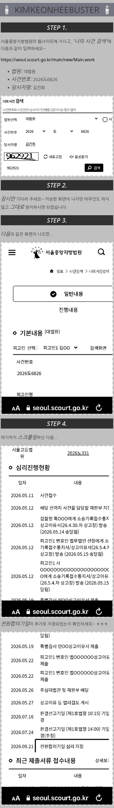
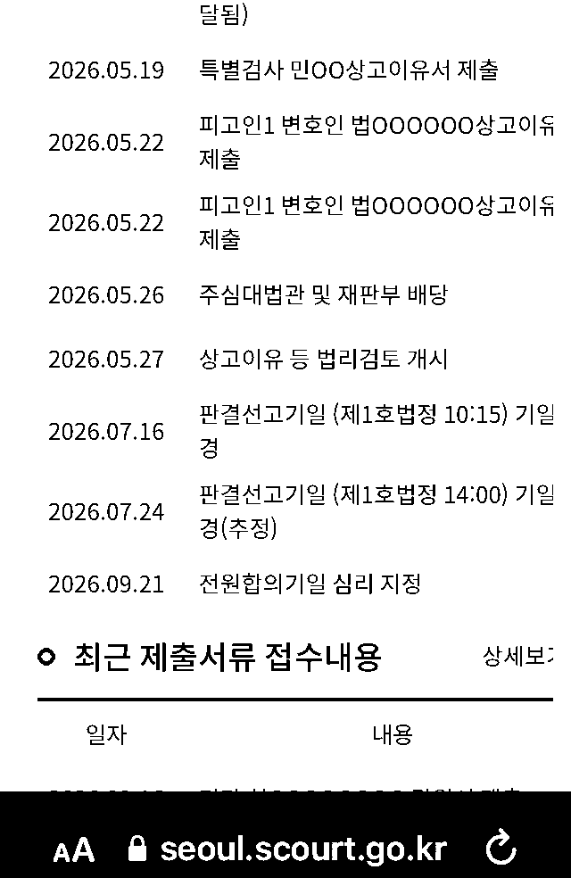
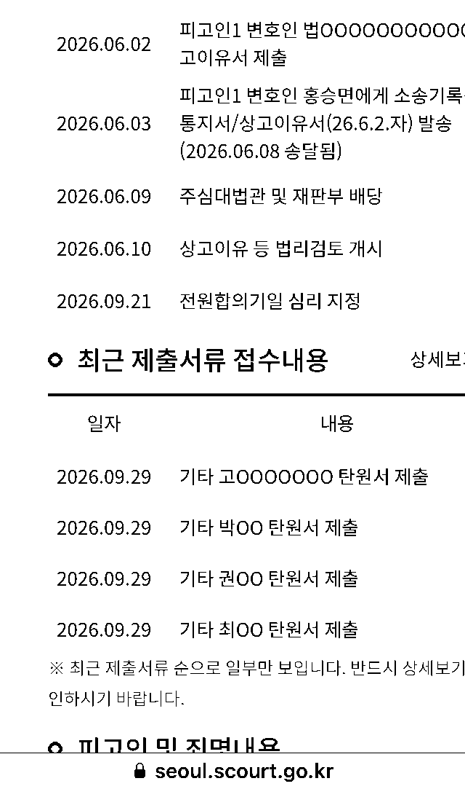
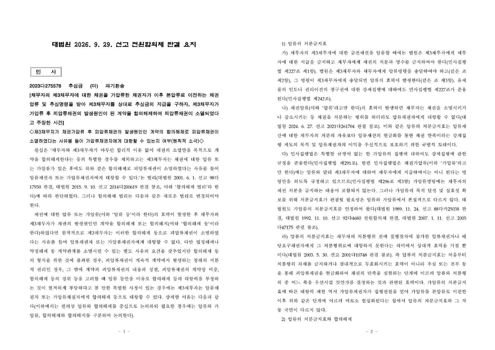
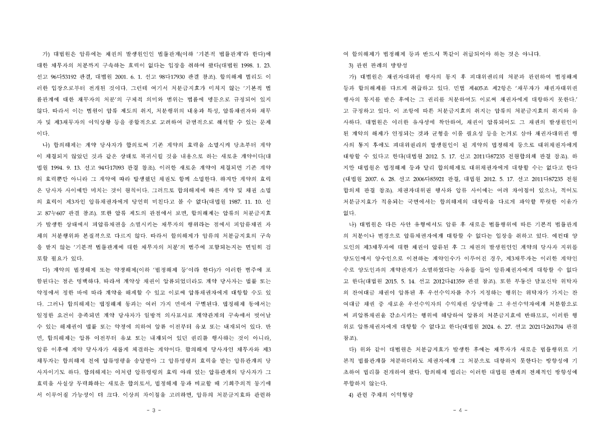
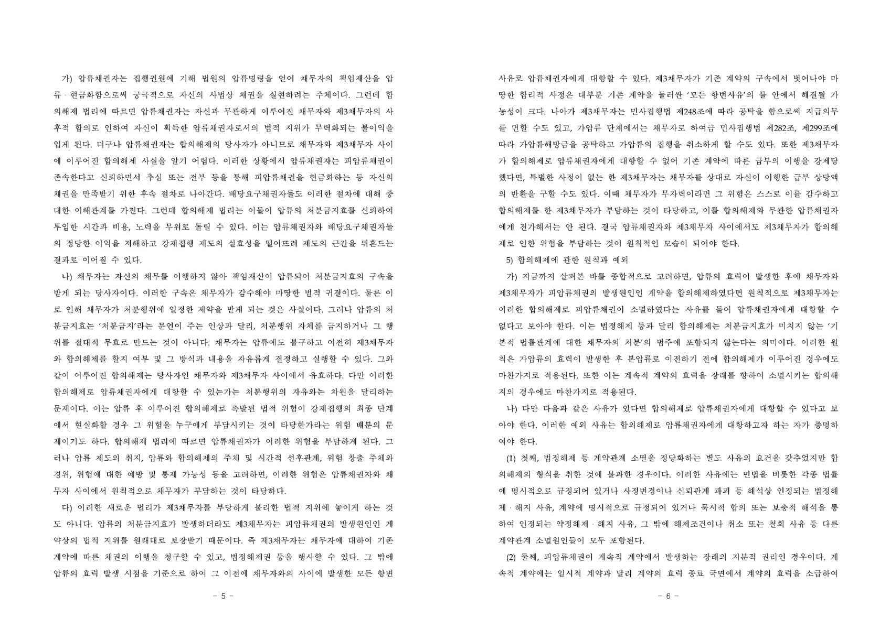
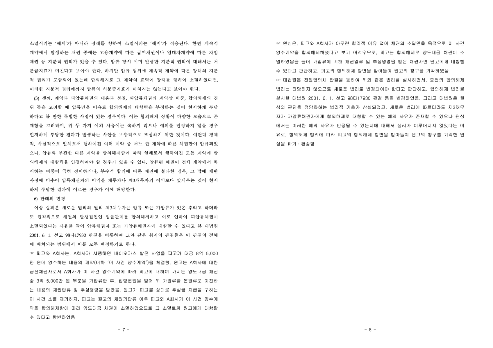
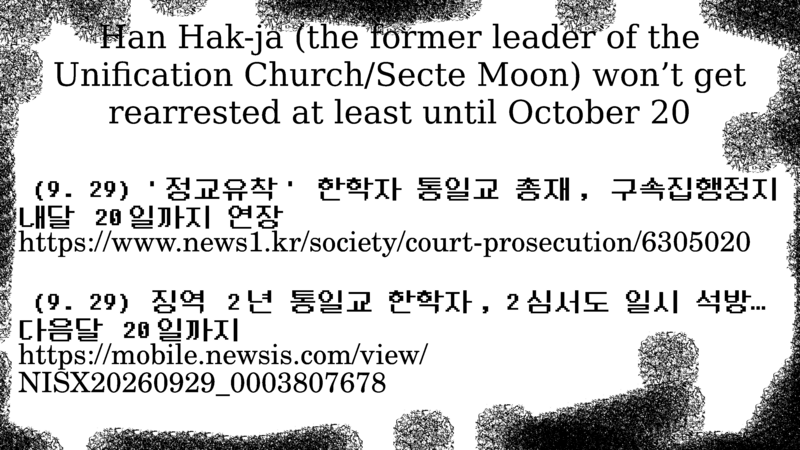

26. 10. 2
下記はその後で尹前大統領と同じ法廷内でなされた証言についてのニュース映像です。この조지호の証言を信じるなら昨日の尹前大統領側の主張はかなりおかしいと言わざるを得ません。国会が尹前大統領の主張通り開かれていたなら「월담者を逮捕しろ」などと命令する必要は無かっただろうからです。월담者が逮捕されずに済んだのは조지호が命令を無視したからですが、尹前大統領はそのことを利用して事実を捻じ曲げようとされたかのようにも見えます。
조지호 전 경찰청장이 "윤석열 전 대통령이 국회로 월담하는 의원들을 체포하라고 지시했다"고 증언했습니다. 24일 서울중앙지법 형사합의25부(부장판사 지귀연) 심리로 열린 윤 전 대통령의 내란 우두머리 혐의 재판에 증인으로 출석한 조 전 청장은 "피고인께서 증인께 월담자를 체포하라고 월담하는 국회의원을 체포하라라고 이야기하신 것은 분명하냐"는 질문에 이같이 답했습니다. 조 전 청장은 "처음에는 국회 통제 관련해 법적 근거가 없어 곤란하다고 말씀드렸다"며 "그 뒤에 후반 통화에서는 국회가 담이 워낙 낮고 쉽게 월담할 수 있어, 월담하는 의원들은 불법이니 체포하라는 말씀이었다"고 했습니다. 조 전 청장은 지난 1일 내란 중요임무 종사 혐의로 기소된 이상민 전 행정안전부 장관 재판에서도 유사한 취지로 증언한 바 있습니다.
(25. 12. 24) 조지호, 윤석열 면전서 또 증언 “월담하는 의원들 체포하라 지시” [지금뉴스]
https://news.kbs.co.kr/news/mobile/view/view.do?ncd=8442119
(25. 12. 24) 尹 법정 대면 조지호 "월담 의원 체포하라" 재차 증언
https://m.yonhapnewstv.co.kr/news/MYH20251224225403jsU
今朝引用した尹前大統領の公判での월담(越담)についての主張はやはり何らかの政治的意図からなされたものだと思います。下記は昨年の記事ですが、当時開かれた김용현の公判でも「우원식の월담写真はフェイクだ」との主張がなされたそうです。この記事の著者は「戒厳を解除した国会や議員らの努力を卑下する主張の展開」(계엄을 해제한 국회와 의원들의 노력을 비하하는 주장을 펼친 것)だと述べています。우원식の場合は若者の人気があったこともあるそうなのでそれを削ぎ落としたかったのだろうと想像しています。
5일(금요일)에 열린 김용현 공판에는 민영준 국회 비상계획업무관이 증인으로 출석했는데, 변호인은 갑자기 우원식 국회의장의 월담 사진을 제시하며 ‘조작’이라고 주장했습니다. 우원식 의장이 담을 넘은 것이 아니라 3문에 매달려 있는 사진이라는 것입니다. 그러나 이미 경찰 간부들의 재판에서, 국회의장 경호대장 김성록 증인이 3문에서 4문 사이의 낮은 격자무늬 철제 울타리를 발견했으며 자신이 먼저 담을 넘었고, 이어서 넘어오는 우원식 의장을 찍었다고 증언한 바 있습니다. 김용현의 혐의와 무관함에도, 계엄을 해제한 국회와 의원들의 노력을 비하하는 주장을 펼친 것입니다.
(25. 12. 6) [주간내란재판 30호] 내란1년, 여전히 음모론에 중독된 내란 수괴
https://peoplepower21.org/government/2005974
また월담についての尹前大統領の過去の主張について私が誤って記憶していたようですが、事実は「戒厳宣布時に尹前大統領が월담した議員を逮捕しろ、と言った」という証言がなされたということだったようです。韓国の方々がこういったことをきちんと記憶しておかないと、事実が上書きされてしまう可能性があります。
윤석열 전 대통령이 지난해 12·3 불법계엄 선포 당일 조지호 경찰청장에게 ‘월담하는 의원들을 체포하라’고 지시했다는 법정 증언이 나왔다. 서울중앙지법 형사합의32부(재판장 류경진)는 1일 이상민 전 행정안전부 장관의 내란 중요임무 종사 등 혐의 공판을 열었다. 이날 재판에는 조지호 경찰청장과 조 청장의 아내 윤모씨가 증인으로 출석했다. 이날 조 청장은 계엄 선포 직후인 12월3일 밤 11시15분부터 한 시간 동안 윤 전 대통령으로부터 6차례 전화를 받았다고 진술했다. 그는 “처음엔 (윤 전 대통령이) ‘국회를 통제하라’고 해서 ‘법률 근거가 없어서 안 된다’고 했다”고 말했다. 이어 “나중에는 국회로 월담하는 의원에 대해 ‘다 잡아라, 체포하라’고 했다”고 말했다. 조 청장은 윤 전 대통령의 체포 지시와 당시 방첩사의 체포조 지원 요청에도 적극적으로 협조하지 않았다고 밝혔다. 조 청장은 “윤 전 대통령이 직접 ‘국회로 들어가는 의원들 체포하라’고 지시했는데, 제가 무시했다”며 “그런데 다른 기관에서 지시한 것에 협조할 리 만무하다”고 말했다.
(25. 12. 1) 조지호 “윤석열, 국회 월담 의원들 ‘다 잡아라, 체포하라’ 지시했다”
https://www.khan.co.kr/article/202512011914001
오늘의 부엌 영상:
https://drive.google.com/file/d/1oKXrAX4CbSjt2atq8YI52AB-unh2j_BI/view?usp=drivesdk
https://drive.google.com/file/d/19ZU2ywRjiWrZhM1x39wKFp70HMTOK0Ug/view?usp=drivesdk
米、中東に空母打撃群を追加派遣へ 対イラン攻撃再開を検討＝報道
https://www.reuters.com/jp/world/us/IPS55Q4CTJIMLH5CT2IQAIPSUE-2026-10-01/
下記の「'관저 이전 의혹' 김건희 여사 외 5명 1차 공판준비기일」というのは金建希の最近起訴された新しい事件の公判準備期日です。韓国でも公判準備期日に被告人の出席義務はありません。「'일반이적 등 혐의' 윤석열 전 대통령 외 3명 항소심 7차공판」はこれも約2週間ぶりとなる尹前大統領の一般利敵事件(平壌ドローン事件)の2審(항소심)公判です。
* 下記の金建希の公判準備期日についての記事は現時点では見つかりませんでしたので、Newsisがある理由からフェイク情報を入れた可能性はあるかと思います。ただ尹前大統領の一般利敵事件の公判が今日開かれるのは確かだと思います。
오전 10시 '관저 이전 의혹' 김건희 여사 외 5명 1차 공판준비기일, 서울중앙지법 형사22부, 523호
오전 10시 '일반이적 등 혐의' 윤석열 전 대통령 외 3명 항소심 7차공판, 서울고법 형사1부, 311호
[오늘의 주요일정]법조(10월2일 금요일)
https://mobile.newsis.com/view/NISX20261001_0003811309
尹前大統領の公判期日を自ら調べたい方は下記のページにある手順を法院名を「서울고등법원」、当事者名を「윤석열」、事件番号を下記の通りそれぞれ置き換えて実行してみて下さい。
- 内乱首謀: 2026노648
- 一般利敵: 2026노1560
https://anissatta.github.io/home-project/kim3/
안녕하세요? 저는 어젯밤에 꾼 꿈 속에서 뱀을 굽고 먹고 있었는데요. 이 뱀이 뭘 의미하는지 잘 모릅니다. 오늘도 오전 10시경에 마르야스에 가요.
下記は昨日(1일)開かれた尹前大統領(윤 전 대통령)の内乱首謀(내란 우두머리)事件の2審(항소심)公判についての記事です。(「윤 전 대통령 측은 1일 서울고법 형사12-1부 심리로 열린 내란 우두머리 사건 항소심에서...」)ここで「월담」という言葉が登場しますが、これは「越」(월)という漢字と「담」という「塀」を意味するハングルの固有語を組み合わせた言葉です。非常戒厳が宣布された当時封鎖されていた国会に入るために월담がなされたことは皆様もご存知だと思います。(私がこの월담という言葉を知ったのはかなり前に尹前大統領が自身の裁判にて「非常戒厳宣布時の議員らの월담は違法だ」と主張していた時です。当時私はこれを「私が大量殺戮をしている横で立ちションをしていたあいつらは犯罪者だ」という主張のようなものだと思いました) 約2週間ぶりとなる内乱首謀容疑事件の公判にて尹前大統領がまず行ったのは自身の政敵である李在明大統領の映像を法廷内で再生することでした。
下記の引用をお読みになれば分かるように尹前大統領が映像を再生しながら述べたかったことは恐らく「国会前に警察を配置したが、これは国会封鎖には該当しない。やつらが월담したり월담映像を公開したりしたのは国会封鎖があったとの事実を捏造するためだ」といったことみたいです。(尹前大統領の論理はしばしば壊れているというか明晰ではないので私は下記を読んでもこの方が何を言いたいのかいまいち分かりませんでした)
ただこれは尹前大統領本人の刑事裁判ですから、このような主張は(私は下記を3回読み直してみましたが、未だに意図が掴めないでいます)的外れなような気もしますし、「どうして2週間ぶりとなる公判で尹前大統領はこのようなことをしたのか」とも思います。まさか私が李在明大統領の写真が出ているこの記事を紹介するのを控えると期待してこのようなことをしたのではないでしょう。この「월담」という単語は恐らくGoogle翻訳で翻訳不可能でしょうから、何かその辺りに理由があるような気もします。
윤 전 대통령 측은 1일 서울고법 형사12-1부 심리로 열린 내란 우두머리 사건 항소심에서 계엄 선포 직후 국회 경내 CCTV 영상을 재생하며 당시 경찰 배치가 국회 봉쇄나 차단에 해당하지 않는다는 취지로 주장했다. 윤 전 대통령은 1심에서 내란 우두머리 혐의로 무기징역을 선고받았고 현재 항소심이 진행 중이다. 영상에는 당시 민주당 의원이던 이 대통령으로 추정되는 인물이 계엄 당일 오후 11시2분께 차량에서 내린 뒤 국회 담을 넘는 모습이 담겼다. 윤 전 대통령 측은 “이 대통령이 공개한 월담 영상과 비교하면 대통령 본인으로 추정된다”며 “김혜경 여사가 운전하는 차량에 탑승해 사람 없는 곳에 내려 월담을 했다는데, 동시간대 국회 도정문에선 신분이 확인되면 월담 없이도 정상적으로 출입할 수 있었다”고 주장했다. 이어 “(이 대통령이 월담한) 바로 뒤인 오후 11시7분경엔 공식적으로 국회의원 출입이 허용된 때”라고 설명했다. 김민석 총리가 당시 국회 담장을 넘는 장면도 재생했다. 윤 전 대통령 측은 “심의의결권을 침해당한 피해자로 인정된 분인데 (12월 4일) 0시45분경 국회 경내로 진입했다”며 “왜 피해자가 됐는지 이해할 수 없는 상황”이라고 주장했다. 이 밖에도 시민들이 담을 넘어 국회로 들어가거나 직원들이 출입증을 제시한 뒤 출입문을 통과하는 장면도 법정에서 제시됐다. 윤 전 대통령 측은 “지금 보는 상황들이 경찰이 국회를 봉쇄했다며 폭동이라고 할 수 있는지 의문”이라며 “당시 배치된 경력으로 봉쇄·차단이 불가능하다는 게 실제 영상으로 확인된다”고 주장했다. 다만 1심 재판부는 윤 전 대통령이 비상계엄 당시 국회에 군을 투입한 행위 등이 국헌문란 목적과 폭동이라는 내란죄 구성요건에 해당한다고 판단해 무기징역을 선고했다.
(10. 1) 李·김민석 월담 영상 재생한 尹 측…국회 봉쇄 없었다
https://www.hankyung.com/article/202610017545H
26. 10. 1
이같이:
https://drive.google.com/file/d/1Si9m5mHO__JfOsy3nFrLSnwRx5TIiTpY/view?usp=drivesdk
https://drive.google.com/file/d/1NCWxye2h2u-HVokF_bpAsvUDJ1ukBY7a/view?usp=drivesdk
https://drive.google.com/file/d/1aokraf3wX4L4gAekBHfNwUz8I1PHJjYt/view?usp=drivesdk
https://drive.google.com/file/d/1WLeJ7ECYPhQVsRaZjERDrte5d3nIHhjI/view?usp=drivesdk
https://drive.google.com/file/d/1yHBLmrXWE4HjlZ970OkOcoxOwxruAz0k/view?usp=drivesdk
제가 매일 아침에 마르야스라는 마트서 산 음식 사진이나 영상을 냈기 때문에 일본 사람이 소문을 냈을 수도 있으니까 내일부터 안 내기로 했어요. (다른 식의 소문이 날 경우에 다시 내기로 할 수도 있지만) 그래서 내일부턴 편지 사진과 부엌 영상만 내기로 합니다. 그런데 저는 만약 지금 청와대와 충돌하고 있는 조희대 대법원장의 인기가 있었다면 아마 이재명 대통령의 인기가 너무 없기 때문이라고 생각합니다. 저는 이재명 대통령의 인기가 없는 이유를 잘 모르겠지만 북한 일에 대해선 다른 사람들도 잘 일할 수 없겠다고 보고 있습니다. 저는 조희대 대법원장이 평양에 가시는 모습을 상상할 수가 없습니다. 북한 문제가 왜 지금 이런 상태인지 이해하기 위해선 아마 백 페이지 정도의 글을 읽을 필요가 있을 것이지만 분들은 그런 글을 읽고 싶지 않으실 거예요. 전에 독일에서 극우 AfD가 압승한 건 SNS의 이용과 관계가 있었을 것 같지만 지금 대한민국에서 일어나고 있는 사태가 SNS로 만들어진 일일 수도 있네요. 저는 이미 일본이 지옥이라고 했는데요 만약 한국까지 지옥이 되고 당신이 그 지옥에서 다른 존재가 될 경우엔 그대로 죽는 것이 좋겠다고 하고 있습니다. 저에겐 한국이 지옥이 될지 안 될지 알기 위한 지표의 하나가 대법원의 김건희 사건에 대한 입장입니다. 한국 분들이 십이삼 비상계엄 이후 고생하시면서 재건하신 건물은 한 순간에 붕괴될 수 있는데 인간들의 뇌는 더 빨리 붕괴될 가능성이 있고, 한번 붕괴된 그런 인간들의 정신은 죽을 때까지 재건되지 않을 것입니다. 저는 단지 당신이 지옥에 살고 있지 않기만 바라고 있습니다. 안녕히 주무세요 한국인이시고 아마존 KIX3에서 일을 하신 Lee씨, 제가 사랑하는 유일하신 분.
한덕수(韓悳洙)の公職選挙法事件の1審で無罪判決が出たという速報が出ていますが、これはもちろん大法院(最高裁)の全員合議体(大法廷)で審理されているものとは無関係です。(大法院で審理するのは3審です)
[속보] '천원 식당'에 150만원 후원한 한덕수, 선거법 1심 무죄
https://www.fnnews.com/news/202610011356592504
私は韓国で現在何が起こっているのかよく分かりませんが、下記のような発言が出てくるほど何かが変質してしまったのは確かだろうと思います。
“윤석열·전두환 내란 아냐” 국힘 김태규에…민주당 “헌법 부정, 징계안 제출”
https://news.kbs.co.kr/news/mobile/view/view.do?ncd=8675561
下記はAI翻訳記事ですが、金建希の事件についても触れられています。(下記引用は一部漢字を修正しています)
この日、最高裁全員合議体はチョ·ヒデ最高裁長官を含め11人の最高裁判事が参加した。 今月初めに退任したイ·フング元最高裁判事とノ·ギョンピル裁判所行政処長は参加しなかった。 同日の会合は、金建希（キム·ゴンヒ）夫人と韓悳洙（ハン·ドクス）元首相、李祥敏（イ·サンミン）元行政安全部長官の上告審事件を非公開で初めて話し合った。
原題: 채무자 처분권보다 채권자 압류권에 무게…대법 25년만 판례변경
https://www.mk.co.kr/jp/society/12163838
この件についての中国語の記事が見つからなかったので中国語版も紹介します。
当天,包括大法院院长赵熙大在内的11名大法官参加了大法院全员协议体。 本月初卸任的前大法官李兴九和法院行政处长卢景弼没有参加。 当天的全合首次非公开讨论了金建希女士、前国务总理韩悳洙、前行政安全部长官李祥敏的上诉审事件。
原題: 채무자 처분권보다 채권자 압류권에 무게…대법 25년만 판례변경
https://www.mk.co.kr/cn/society/12163838
下記は少し古い記事ですが、英訳されています。
The Supreme Court will convene an en banc hearing on the 29th to begin substantive proceedings on allegations concerning Kim Keon-hee, spouse of former President Yoon Suk-yeol: ‘receiving free election polling results from Myung Tae-gyun’, ‘Deutsch Motors stock manipulation’, and ‘accepting valuables from the Unification Church’. On the same day, it will also hear cases involving former Prime Minister Han Duck-soo and former Minister of the Ministry of the Interior and Safety Lee Sang-min on charges related to performing key duties in an insurrection.
(9. 22) Supreme Court en banc to begin full hearings on the 29th in the Kim Keon-hee case… will also review the Han Duck-soo and Lee Sang-min cases
https://www.khan.co.kr/en/article/202609222132037
金建希については日本語の記事も出ているのでこれを読んでみて下さい。(ここでは「全員合議体」の代わりに日本語の「大法廷」が使われています)
韓国最高裁は、ユン・ソンニョル（尹錫悦）前大統領の妻キム・ゴニ（金建希）氏のいわゆる「3大疑惑」を巡る事件と、ハン・ドクス（韓悳洙）元首相、イ・サンミン（李祥敏）元行政安全相の「12・3非常戒厳」を巡る事件について、大法廷での審理を開始した。 法曹界によると、最高裁は29日に大法廷の期日を開き、キム・ゴニ氏の資本市場法・政治資金法違反、特定犯罪加重処罰法上のあっせん収財事件と、ハン・ドクス氏、イ・サンミン氏の内乱重要任務従事などの事件について初審理を実施した。 最高裁はキム・ゴニ氏の事件を7月23日、ハン・ドクス氏とイ・サンミン氏の事件を8月5日にそれぞれ大法廷に付託していた。 大法廷の審理には最高裁判事だけが参加し、非公開で進められる。通常は月1回、第3木曜日に開かれるが、最高裁長官が日程を変更したり、追加の期日を設けたりすることもできる。 キム・ゴニ氏の事件で最大の争点となっているのは、ユン・ソンニョル（尹錫悦）前大統領とともに政治ブローカーのミョン・テギュン氏から無償で提供を受けた世論調査の結果が、政治資金法で禁じられた政治資金の寄付に当たるかどうかだ。 キム・ゴニ氏は、クォン・オス元ドイツ・モーターズ会長らと共謀して株価を操作した罪に問われたほか、チョン・ソンベ氏を介して旧統一教会側から請託とともにシャネルのバッグやグラフのダイヤモンドネックレスなどを受け取った罪、ユン前大統領と共謀し、ミョン氏から計2億7000万ウォン（約2800万円）相当の世論調査58回分を無償提供された政治資金法違反の罪に問われた。 一審は旧統一教会側からの金品受領を巡るあっせん収財罪の一部のみを有罪と認定し、懲役1年8カ月を言い渡した。二審は一審で無罪とされたドイツ・モーターズの株価操作と、金品受領を巡るあっせん収財罪の一部を有罪とし、懲役4年、罰金5000万ウォン（約520万円）を言い渡した。 一方、ミョン氏から世論調査を無償で提供されたとする政治資金法違反については、一、二審とも無罪とした。同じ罪で別に起訴されたユン前大統領は7月の一審で有罪判決を受けており、下級審で判断が分かれている。最高裁はこうした状況を受け、キム・ゴニ氏の事件を大法廷に付託した。 大法廷での結論が出ないまま拘束期限を迎え、キム・ゴニ氏が釈放される可能性もある。拘束期限は10月31日までとなっている。 これを受け、特別検察官はキム・ゴニ氏に対する追加の拘束令状請求を検討している。キム・ゴニ氏は22日、人事上の便宜を図る見返りなどとして各種金品を受け取ったとする別の事件で、二審で懲役5年を言い渡され、翌日に上告した。 特別検察官は大法廷の審理状況を見極め、拘束期限までに結論が出るのが難しいと判断した場合、この別事件の上告審で追加の拘束令状を請求する方針だ。 ハン・ドクス氏は、非常戒厳の宣布が国務委員による審議を経たように見せるため国務会議（閣議）の開催を提案し、戒厳宣布後には国務委員らに関連文書への署名を求めるなど、内乱の重要任務に従事した罪に問われている。 一審は大半を有罪とし、懲役23年を言い渡した。二審も主要な罪について有罪判断を維持したが、一部について判断を変更し、懲役15年に減刑した。 イ・サンミン氏は戒厳当時、ユン前大統領から国会など主要機関の封鎖や特定メディアへの電気・水道供給停止の指示を受け、当時の消防庁長に警察から要請があれば協力するよう指示したとして、内乱の重要任務に従事した罪などに問われている。 一審は内乱重要任務従事を有罪とし、懲役7年を言い渡した。二審は有罪・無罪の判断を維持した上で、特別検察官側の主張を受け入れ、懲役9年に引き上げた。 最高裁はハン・ドクス氏とイ・サンミン氏の事件を大法廷に付託した際、「国民の関心が非常に高く、歴史的に司法判断が必要だ」とし、両被告が共犯関係にあるため一緒に審理する必要があると説明している。
(9. 30) 韓国最高裁、金建希氏の上告審で初めての審理…拘束期限は10月末
https://www.afpbb.com/articles/-/3655268?act=all
現時点で金建希、한덕수•이상민の大法院審理に関する新しい情報は皆無でした。皆様も探してみて下さい。
この団地や地域の方々にお伝えしたいのはこの事態はもうすぐ終わるだろうということと、私はある理由から戦略的に偽情報を出したり情報を隠したりしていたということです。(私は韓国の大法院が私についての噂を知っている可能性もあると思っています) また私が自室内で呟いたこともある程度はそういった意図によって調整されていました。全ては書きませんが、私は中国で開催されるAPECサミットで高市首相が習主席と対談されるのかを韓国のモーテルに設置されたTVを通して知ることは可能だろうと思っています。
Asked how he thinks he can reach a deal with Iran if he thinks their leaders are irrational, US President Donald Trump responds, “Maybe you blow them up.” “We have to make that decision. [Either we] make a deal… but the time has come. It’s going to end very soon,” Trump claims to reporters in the Oval Office.
Trump says ‘time has come’ to either make a deal with Iran or ‘maybe blow them up’
以前も紹介したかも知れませんが、関連記事です(何件か記事を読むとそれ以上無料では読めなくなるようです):
With bilateral ties in a deep freeze since late last year, a flurry of planned China visits by Japanese lawmakers and business leaders has been interpreted as an attempt to break the ice ahead of November’s Apec summit in China. However, analysts warned that these efforts to carve out a diplomatic opening with Beijing might not achieve much unless Tokyo sends a clearer signal to mend ties from the very top.
(9. 15) Japanese delegations flock to China, but thaw hinges on Takaichi mending ties
下記のような記事も出ていました:
岩屋前外相が中国2高官と会談...11月APECで「習近平氏は高市首相とだけ会談しない可能性も」とテレ朝・千々岩官邸キャップ
https://www.j-cast.com/2026/09/30518195.html
私が皆様から迫害を受け始めた時期には下記のような記事も出ていました。無料では全文は読めませんが、日本の一部の政治家が中国側との面談に成功したからといって、中日関係改善や首脳レベルでの面談が実現すると考えるのはあまりに浅はかです。
China’s top diplomat Wang Yi and Vice-Premier He Lifeng met Japan’s former foreign minister Takeshi Iwaya in Beijing, marking the highest-ranking Chinese official reception for a Japanese visit in nearly a year. Analysts, however, cautioned that the high-level reception should not be seen as an opening to a diplomatic thaw. Instead, they viewed the encounter as a calculated exercise by Beijing in selective engagement.
(9. 29) China warns Japan over WWII history as business delegation visits Beijing
以前高市首相が「敵国条項削除」を訴えられた直後にも高齢の方にバケツで水をかけられそうになったので、今回も中日関係が関係しているのかも知れません。下記によると最近小泉防衛相が安保3文書の改訂について述べたことが中日関係に悪影響を与えたのではないかとも思います。
Phoenix TV: It is reported that Japan’s defense minister Shinjiro Koizumi reiterated on Monday that during the revision of the three security documents, discussions on the possession of nuclear weapons and nuclear submarines should not be ruled out. He claimed that discussions should be made “without taboo” or predetermined results; and if discussions are not even allowed, it will be “a bit at odds with my sense of crisis.” What’s China’s comment?
Guo Jiakun: The possession of nuclear weapons is not an issue that Japan can “allow discussion” if it wants to. Japan is a non-nuclear-weapon state party to the Non-Proliferation Treaty and therefore has a bounden duty under international law to not receive, manufacture, acquire or transfer nuclear weapons. There is no room for negotiation. Just last February, Sanae Takaichi reiterated Japan’s commitment to the three non-nuclear principles. Japan’s representative reaffirmed multiple times at the Review Conference of the Parties to the NPT in May that the three non-nuclear principles would not be changed. Their words still ring in our ears. The “no-nuclear-taboo” remark by the incumbent head of Japan’s defense establishment is a blatant provocation and serious stomp on the NPT and the postwar international order. It is diametrically opposed to the three non-nuclear principles that Japan claims to uphold. His remark once again revealed the Japanese right-wing pursuit of a nuclear Japan. In recent years, Japan has been accelerating remilitarization and attempting to revise the three non-nuclear principles by strengthening the so-called “extended deterrence” arrangement, seeking nuclear weapon deployment in Japan, attempting to progressively ease nuclear restrictions, and challenging the red line drawn by the international community. This year marks 80 years of the opening of the Tokyo Trials. History has not and will not forget the calamities brought by Japanese militarism onto the people in Asia and elsewhere in the world. As Japanese right-wing forces keep challenging the postwar international order and the non-proliferation regime and moving further down the wrong path, the international community needs to call on Japan to strictly observe the three non-nuclear principles, fulfill its obligations under the NPT, abandon remilitarization and nuclear attempt, and earnestly respond to the concerns of the international community.
Foreign Ministry Spokesperson Guo Jiakun’s Regular Press Conference on September 30, 2026
https://www.mfa.gov.cn/eng/xw/fyrbt/lxjzh/202609/t20260930_12034352.html
凤凰卫视记者：据报道，28日，日本防卫大臣小泉进次郎表示，在修订“安保三文件”时，不应排除关于拥有核武器和核潜艇的讨论，称应当不设禁忌、不预设结论地进行讨论，“若连讨论都不被允许，那便与我的危机感有些脱节”。中方对此有何评论？
郭嘉昆：首先，拥有核武器不是日方想不想讨论的问题。日本是《不扩散核武器条约》无核武器缔约国，不接受、不制造、不拥有、不扩散核武器是日本不可推卸的国际法义务，没有讨价还价的余地。高市早苗今年2月重申坚持“无核三原则”，出席5月《不扩散核武器条约》审议大会的日本代表多次确认不改变“无核三原则”，言犹在耳。 日本现职防卫部门负责人放出“不设禁忌讨论核武器和核潜艇”的狂言，是对《不扩散核武器条约》、二战后国际秩序的严重挑衅和公然践踏，严重背离日本声称奉行的“无核三原则”，再次暴露日本右翼势力拥核企图。近年来，日本不断加速“再军事化”进程，图谋抛弃“无核三原则”，强化所谓“延伸威慑”安排，谋求核武器在日本部署，妄图实现渐进式核松绑，不断挑战国际社会底线。 今年是东京审判开庭80周年。历史没有也不会忘记日本军国主义给亚洲人民乃至世界人民带来的深重灾难。日本右翼势力不断挑战二战后国际秩序和国际核不扩散体系，在错误的道路上越走越远。国际社会应敦促日本恪守“无核三原则”，严格履行《不扩散核武器条约》义务，彻底放弃“再军事化”和拥核企图，切实回应国际社会严正关切。
2026年9月30日外交部发言人郭嘉昆主持例行记者会
https://www.fmprc.gov.cn/fyrbt_673021/202609/t20260930_12034297.shtml
先の中国外交部の記者会見で触れられていたのは下記の出来事だと思います。
小泉進次郎防衛相は28日のBSフジ番組で、国家安全保障戦略など安保関連3文書の改定に関し、核兵器や原子力潜水艦保有に関する議論を排除すべきではないとの考えを重ねて示した。「タブーなく、決め打ちせず、議論することすら認められないのは私の危機感とはちょっとずれている」と述べた。 中国やロシアの核戦力や北朝鮮の核開発に触れ「『議論したくないことはしない』ということで本当に日本は平和を守り切れるのか。そういった段階に世界は移りつつある」と指摘。「われわれに対する脅威を、拒否する力をしっかりと持たなければいけない」と強調した。 年内に予定する安保3文書改定を巡り「最終的には高市早苗首相が政治判断するテーマもある。首相のフリーハンドを確保するための環境整備も私の仕事の一つだ」と述べた。 小泉氏は7月公開のインターネット番組で、核兵器に関する議論について「触れざるを得ない」と言及していた。原潜保有も「あらゆる選択肢を排除せずに検討する」としている。
小泉防衛相、タブーなく核兵器・原潜保有を議論 安保3文書改定巡り
https://www.nikkei.com/article/DGXZQOUA28AHN0Y6A920C2000000/
恐らくこういった中高年の方々からの嫌がらせは今後も続くと思いますが(まさか韓国の大法院がそれを期待して判決を下すのを遅らせているのではないでしょうが)、とりあえず暫くの間はこういった方々への対策を行ってみます。理由はよく分かりませんが、高市首相についての記事を紹介すると迫害が止む時があったのでまずこれを紹介します。(週刊誌に掲載されているようなのでお読みになった方もおられるでしょう) これはゴシップ記事として面白いだけでなく、日米関係についての深刻な懸念をも暗示しています。
国連総会に出席するため、政府専用機で羽田空港を出発した高市首相は、9月21日（日本時間22日）にニューヨークへ到着。トランプ大統領との会談や国連総会での演説に臨んだ。しかし日本で話題をさらったのは、首相官邸の公式X（旧ツイッター）に投稿された1つの動画だった。 動画には、ジョン・F・ケネディ国際空港に到着した高市首相の様子が収められている。そこにはタラップの上で右手を高々と上げ、大勢の群衆に手を振っているらしき高市首相の姿が。この映像は、各ニュースメディアなどでも使用されている。 しかし、内閣広報官の公式Xが高市首相の背後からの写真を投稿したことで事態は一変。高市首相が手を振る先には誰もいなかったのだ。
(9. 26) 《結局、誰に手を振っているの？》高市首相の“エアお手振り動画”で露呈した広報費の“お粗末な使い方”…世界的美術家・奈良美智氏も呆れ
https://www.jprime.jp/articles/-/43745?display=b
昨日から中年-高年女性から嫌がらせを受けることが増えてきましたが、以前も述べたように金建希に対する最高裁判決が出れば仮に無罪であっても日本語での報道がなされる筈ですから、あと2-3週間位放っておいて頂ければと思います。(以前から述べているように私は皆様と何の関係もありませんし、皆様が私に危害を加える権利はありません) 下記は以前紹介した記事と映像です。韓国では今でも尹前大統領を支持する人々がおられますので、金建希が釈放された場合にまた暴動のような事件が発生する可能性もあります。
(7. 22 再掲) 下記に今日撮影された金建希が乗った護送車の写真が出ています。
'관저 이전' 의혹 김건희, 2차 특검에 피의자 신분 첫 출석
https://www.chosun.com/national/court_law/2026/07/22/UBY5M3ALCJFE7K6N2RADL4I2CQ/
下記はその映像です。尹前大統領の支持者達が「キムゴンヒ(ゴニ)」と音頭をとっていますね。
https://www.youtube.com/live/IhI_dOK4f64
これらの祝日については下記を参考にしてみて下さい。
開天節（ケチョンジョル／개천절）：10月3日、10月5日（振替休日）
韓国民族の最初の国家である古朝鮮の建国を記念して作られた日です。この日は江華島（カンファド）の摩尼山（マニサン） 塹星檀（チャムソンダン）、 谷城（コクソン）檀君殿（タングンジョン）、 太白山（テベクサン）檀君殿、曽坪（チュンピョン）檀君殿、ソウル檀君聖殿（白岳殿）など各地で祭祀が行われます。
ハングルの日（ハングルナル／한글날）：10月9日
世宗（セジョン）大王がハングルを作って世の中に広めたことを記念し、ハングルの優秀性を広めるために定められた日です。
2026年・2027年韓国の祝祭日完全ガイド
https://japanese.visitkorea.or.kr/svc/contents/contentsView.do?vcontsId=140045
これが今後流れる噂と関係するかも知れませんので先に書いておきますが、10月3日(土)は開天節(개천절)という祝日です。翌週10月5日(月)はその振替休日となります。また10月9日(金)はハングラル(한글날)でありこれも休日です。これらの日には法院(裁判所)も休みますから、裁判等が開かれることは基本的にないはずです。
以前出た下記の記事には「대법원장은 대법관들의 의견을 들어 전원합의기일에서 심리할 사건을 적어도 합의기일 10일 전까지 지정해야 하는데」とありましたから、仮に大法院が金建希の拘束期間満了(10月末)直前に宣告公判を開く予定であったとしても、その10日前までにはその宣告期日を指定せねばならないということになります。これが正しければ今月の第3週あたりになっても期日指定について何ら報道がなされなければ危機的な状態だと言わざるを得ません。金建希が釈放されればまた韓国国内で分断・内乱が再発する可能性もあり、経済や外交への悪影響は予測しがたいと思います。その全てが조(曺)희대大法院長の意思にかかっています。
전원합의기일은 전원합의체 심리를 위해 열리는 기일로 보통 한 달에 한번 열린다. 대법원장은 대법관들의 의견을 들어 전원합의기일에서 심리할 사건을 적어도 합의기일 10일 전까지 지정해야 하는데 신속한 심리를 위해 필요한 경우엔 바로 지정할 수 있다. ‘대법원 전원합의체의 심리절차에 관한 내규’에 따르면 국민적 관심도가 매우 높은 사건 등에 해당할 경우 대법원장이 전원합의기일에서 심리할 사건으로 지정할 수 있다.
(9. 22) [단독] 대법, 29일 ‘내란’ 한덕수·이상민, ‘명태균 여론조사’ 김건희 전원합의기일
https://www.hani.co.kr/arti/society/society_general/1279115.html
下記は今日出た記事ですが、「대법원은 지난달 29일 이 사건의 첫 전원합의기일을 진행했지만 아직 선고기일을 지정하지 않았다」とあるように一昨日第1回 全員合議期日(전원합의기일)が開かれたものの、まだ宣告期日(선고기일)は指定されていません。もしこの状態が今月末まで続いた場合、金建希が釈放される可能性があると下記記事は述べています。
1일 법조계에 따르면 김 여사의 3대 의혹 사건 상고심 구속기간은 오는 10월 31일까지다. 김 여사는 도이치모터스 주가조작과 명태균 무상 여론조사, 통일교 금품수수 관련 혐의 등으로 2심에서 징역 4년과 벌금 5000만 원을 선고받고 구속 상태에서 대법원 판단을 받고 있다. 대법원은 지난달 29일 이 사건의 첫 전원합의기일을 진행했지만 아직 선고기일을 지정하지 않았다. 전합이 구속기간 만료 전 선고하지 않는다면 이 사건을 근거로 김 여사의 구속 상태를 계속 유지할 수 없다. 다만 별도로 진행되는 매관매직 사건이 변수다.
한달 뒤 구속 만료되는 김건희, 석방되나…법조계 "추가 영장 가능성 높아"
https://m.newspim.com/news/view/20260930001193
오늘의 부엌 영상:
https://drive.google.com/file/d/1ai54Y06BG3Ac_JS77fapkg-PX9Z8OPN5/view?usp=drivesdk
https://drive.google.com/file/d/1xhYSwjlzsCbODmc-rXcl-IpXN2AKsn0-/view?usp=drivesdk
フライドバイのパイロットが同僚を刺した後、イスラエル行きの旅客機を墜落させようとしたとネタニヤフ首相が発言
今日は尹前大統領(윤석열 전 대통령)の内乱首謀(내란 우두머리)容疑に関する公判が開かれるそうです。チュソク連休の影響からか約2週間ぶりとなります。
오전 10시 '12·3 비상계엄' 내란 우두머리 등 혐의 윤석열 전 대통령 외 7명 항소심 17차공판, 서울고법 형사12-1부, 417호
[오늘의 주요일정]법조(10월1일 목요일)
https://mobile.newsis.com/view/NISX20260930_0003809571
下記は法院組織法(법원조직법)の該当の条文です。
제65조(합의의 비공개) 심판의 합의는 공개하지 아니한다.
https://www.law.go.kr/법령/법원조직법/(20261001,21503,20260331)/제65조
안녕하세요? 전합(전원합의)기일란 공판기일과 같은 일이니까 선고기일이 지정될 때까지 속행 전합기일이 지정될 것입니다. 그리고 마지막 전합기일에서 선고기일이 지정될 것이라고 보이는데요. 지난 21일에 대법원이 김건희 사건 첫 전합기일을 지난 29일으로 지정하고 그 29일 전합기일을 법원조직법 제65조에 따라 비공개로 진행했는데요 속행 전합기일 또는 선고기일을 지정할 경우엔 대법원이 그걸 공개할 것이지만 아직 아무 기일도 지정하지 않은 것 같습니다. 오늘도 오전 10시경에 마르야스에 가요.
https://anissatta.github.io/home-project/kim4/
26. 9. 30
김건희나 한덕수•이상민에 대한 새 뉴스는 아마 내일 이후 나올 것이라고 생각되는데요. 그런데 최근에는 호르무즈에 관한 뉴스가 거의 나지 않아서 저는 오히려 좀 걱정입니다. (실은 우리가 모르는 동안에 정부가 준비를 하고 있을 수도 있으니까) 일본에선 역시 미일 관계를 걱정하는 사람이 많고 양쪽이 실은 뭔가 이상한 이야기를 하고 있지 않을까 의심하는 사람도 있는 것 같습니다. 이 기사( Takaichi briefed by Trump about US-China summit, https://www3.nhk.or.jp/nhkworld/news/20260927de52635/ )에 대해서도 숨겨진 이야기가 있지 않을까 의심한 사람이 있을 것인데요. 저는 한미 관계나 북한 일에 대해 더 공부해야지 하고 있지만 당신의 남편이 되기 위해 가장 중요한 과목이 어떤 일인지 아직 잘 모릅니다. 저는 한번 합격한 시험에 떨어진 낙제생과 같은 존재일 거예요. 저는 김건희의 형이 확정되면 이전과는 다른 식으로 행동해 갈 생각인데요. 미국이나 중국에 관한 뉴스는 우리 사랑과는 거의 무관합니다. 저는 지금은 제가 당신을 반드시 다시 만날 것이라고 믿고 있기 때문에 시간을 더 소중히 보내기로 했습니다. 안녕히 주무세요 한국인이시고 아마존 KIX3에서 일을 하신 Lee씨, 제가 사랑하는 유일하신 분.
다음 절차를 하루에 세 번 해 주세요. 이건 행복하게 되기 위한 주술적인 줄입니다.
https://anissatta.github.io/home-project/kim4/

(Wifi spot에서) 金建希(김건희)の事件番号は「2026도6826」(대법원)ですが、やはり同じ状態です。

さっきソウル中央地方法院のホームページにある「나의 사건 검색」機能を使って이상민の事件を調べてみましたが、下記の通り「2026.09.21 전원합의기일 심리 지정」という記事がありました。これは恐らく昨日の期日が21日に指定されたということだと思いますが、全員合議期日指定について他の記事はありませんでしたので、大法院はまだ次の全員合議期日ないし宣告期日を指定していないのだと思います。皆様も下記のページにある手順を法院名を「대법원」、当事者名を「이상민」、事件番号を「2026도7559」にそれぞれ置き換えて実行してみて下さい。
https://anissatta.github.io/home-project/kim3/

(Wifi spot에서) 下記は昨日の(民事訴訟の)「宣告映像」です。
現時点で金建希、한덕수•이상민の大法院審理に関する新しい情報は皆無でした。皆様も探してみて下さい。
今日公判が開かれる尹前大統領の事件は下記のWikiにあるものだと思いますが、これによればこの事件の事件番号は「2025고합1566」であり管轄は서울중앙지방법원です。
해병대 제1사단 일병 사망 사고/재판/윤석열·이종섭·조태용·신범철·유재은·박진희·김계환·김동혁·전하규·허태근·유균혜·이갑준
https://namu.wiki/w/해병대%20제1사단%20일병%20사망%20사고/재판/윤석열·이종섭·조태용·신범철·유재은·박진희·김계환·김동혁·전하규·허태근·유균혜·이갑준
下記のページにある手順を当事者名を「윤석열」、事件番号を「2025고합1566」にそれぞれ置き換えて実行してみて下さい。今日の公判に誰が出席する予定かが分かると思います。
https://anissatta.github.io/home-project/kim3/
下記は先ほど見つけた조(曺)희대大法院長についての記事です。(「대선」とは「대통령 선거」(大統領選挙)の縮約語です)
박지원 더불어민주당 의원이 조희대 대법원장의 최근 행보를 두고 윤석열 전 대통령처럼 대선 출마를 염두에 두고 인지도를 높이려는 것 아니냐고 주장했다. 박 의원은 29일 YTN 라디오 ‘이동형의 뉴스 정면승부’에 출연해 조 대법원장이 청와대의 대법관 후보자 재제청 요구를 거부하고 국정감사에서 관련 입장을 밝히겠다고 한 데 대해 이같이 말했다. 박 의원은 “검찰총장 윤석열처럼 대법원장 조희대도 엉뚱한 생각, 대통령 선거에 나오려고 인지도 높이는 작업을 하는 것 같다”고 주장했다. 이어 조 대법원장의 행보를 두고 “여의도 정치를 뺨친다”며 “조희대 대법원장의 ‘서초동 정치’로 지금 사법 정치를 하고 있는 것”이라고 말했다. 진행자가 국민의힘이 과거 윤 전 대통령처럼 조 대법원장을 외부 인사로 영입할 가능성을 언급하자 박 의원은 “거기는 지금 대통령감이 없기에 그럴 수도 있을 것”이라고 답했다. 박 의원의 발언은 최근 청와대와 대법원 사이에서 이어지고 있는 대법관 후보자 재제청 갈등을 언급하는 과정에서 나왔다.
박지원 “조희대, 尹처럼 대통령 나오려고 인지도 높이는 듯”
https://v.daum.net/v/20260930104454662
同様の見出しは他の媒体にも出ています。
박지원 조희대 대선 출마하려 인지도 높이는 것
https://www.hankyung.com/article/202609303655H
박지원 "조희대, 윤석열처럼 대선 나오려고 인지도 높이는 듯"
https://news.jtbc.co.kr/article/NB12320648




下記の通り昨日大法院で出た判決は民事(민사)一件です。
[민사]
2023다275578 추심금 (마) 파기환송
[채무자의 제3채무자에 대한 채권을 가압류한 채권자가 이후 본압류로 이전하는 채권압류 및 추심명령을 받아 제3채무자를 상대로 추심금의 지급을 구하자, 제3채무자가 가압류 후 피압류채권의 발생원인이 된 계약을 합의해제하여 피압류채권이 소멸되었다고 주장한 사건]
◇제3채무자가 채권가압류 후 피압류채권의 발생원인인 계약의 합의해제로 피압류채권이 소멸하였다는 사유를 들어 가압류채권자에게 대항할 수 있는지 여부(원칙적 소극)◇
대법원 2026. 9. 29. 선고 전원합의체 판결 요지
https://www.scourt.go.kr/sjudge/1790662743365_151903.pdf
下記は入力時刻が今日の朝になっていますが、内容は昨日の晩に出たものと同様だと思います。
김성수 대법관 임명으로 공석이 한 자리로 줄어든 대법원이 김건희 씨의 '명태균 게이트' 연루 의혹에 대한 전원합의체 기일을 열었습니다. 원래 배당받았던 소부가 선고 직전 돌연 사건을 전원합의체로 회부한 지는 2개월, 항소심 선고로부터는 5개월 만입니다. '명태균 게이트'의 핵심은 2022년 대선을 앞두고 윤석열 전 대통령 부부가 정치브로커 명태균 씨로부터 2억 원어치가 넘는 수십 차례의 여론조사를 무상으로 제공받았는 지 여부입니다. 김 씨의 1·2심 재판부는 정치자금법 위반 혐의가 없다고 봤지만, 윤 전 대통령 1심 재판부가 유죄로 판단한 게 변수가 됐습니다. 대법원이 제시한 핵심 쟁점은 '여론조사를 실시하거나 그 결과를 제공한 행위가 정치자금법이 금지하는 기부에 해당하는지'입니다. 대법관들이 모이긴 했지만, 전원합의체가 언제 결론을 낼지는 미지수입니다. [노경필/법원행정처장 (그제)] "사안에 따라서 한 번에 끝낼 수도 있고 여러 번 속행이 될 수도 있어서 뭐라고 말씀드리기가…" 문제는 여전히 시간입니다. 이미 특검법이 규정한, 이른바 '6·3·3 규정'의 시한인 항소심 결과 후 3개월의 시한도 넘긴 상태인 데다, 김 씨의 구속 기한도 오는 10월 말까지입니다. 때문에 '김건희 국정농단' 특검은 매관매직 의혹 사건을 새로 담당할 대법원 소부에 추가 구속영장을 청구해 구속 기간을 늘리는 방안도 검토 중입니다. 전원합의기일에서는 한덕수 전 국무총리와 이상민 전 행정안전부 장관의 내란 혐의 사건도 함께 심리됐습니다. 앞서 대법원은 지난 8월 두 사건을 전원합의체에 회부하면서, "역사적으로 사법적 평가가 필요하고 피고인들이 공범 관계여서 함께 심리할 필요가 있다"고 밝힌 바 있습니다.
김건희 상고심 첫 심리‥구속 만료 전 결론 낼까?
https://imnews.imbc.com/replay/2026/nwtoday/article/6854906_37012.html
昨日大法院で審理された8件の全員合議体事件のうち審理の内容が発表されたのは昨日判決のあった民事訴訟(추심금 청구 소송)についてのみです。(昨日も述べたように判決日ではない審理期日での審理の内容は公開されないことになっています) ここで昨日大法院で金建希だけでなく한덕수と이상민の事件も審理されたことに着目してみて下さい。この方々の事件は金建希のと同様国民の関心の的となっている事件ですから、何か情報が出れば報道されるはずです。昨日示した検索例に「한덕수+이상민」というキーワードを入れておいたのはその為です。

뉴스1からも引用しておきます。
세계평화통일가정연합(통일교) 정교유착 의혹으로 기소돼 1심에서 총 징역 2년을 선고받은 한학자 통일교 총재(83)의 구속집행정지 기간이 내달 20일까지로 추가 연장됐다. 29일 법조계에 따르면 서울고법 형사13부(고법판사 김무신 이우희 유동균)는 이날 한 총재가 신청한 구속집행정지 연장 신청을 받아들였다. 이에 따라 이달 30일 오후 6시까지였던 한 총재의 구속집행정지 기간은 내달 20일 오후 3시까지로 연장됐다. 이 기간 한 총재는 치료받는 병원에만 머무를 수 있고 사건 관련자와 직간접적으로 접촉하거나 연락하면 안 된다. 구속집행정지는 피고인에게 중병, 출산, 가족 장례 등 긴급한 사유가 있을 때 일시적으로 석방하는 제도다. 지난해 10월 구속기소 된 한 총재는 지난 3월 말부터 건강 악화 등을 이유로 구속집행정지 결정을 받아 수차례 연장 신청을 내고 병원에 머무르며 재판을 받아왔다. 지난달 1심에서 실형을 선고받은 한 총재는 같은 날 고령으로 인한 구치소 생활의 어려움 등을 이유로 구속집행정지 기간 연장을 신청했고 법원은 이를 받아들였다.
(9. 29) '정교유착' 한학자 통일교 총재, 구속집행정지 내달 20일까지 연장
https://www.news1.kr/society/court-prosecution/6305020
金建希の事件について情報が出てこないので韓鶴子についてのニュースを紹介します。「한 총재의 석방 기간은 오는 30일 오후 6시 만료 예정이었지만, 이번 결정으로 내달 20일 오후 3시까지 석방을 유지한다」とあるように本来であれば今日の夕方再拘束される予定だったのですが、来月20日まで釈放状態が維持されるとのことです。
29일 법조계에 따르면 서울고법 형사13부(고법판사 김무신·이우희·유동균)는 이날 한 총재의 구속집행정지 신청을 인용했다. 한 총재의 석방 기간은 오는 30일 오후 6시 만료 예정이었지만, 이번 결정으로 내달 20일 오후 3시까지 석방을 유지한다.
(9. 29) 징역 2년 통일교 한학자, 2심서도 일시 석방…다음달 20일까지
https://mobile.newsis.com/view/NISX20260929_0003807678
これはあまり関係ないと思いますが、尹前大統領の公職選挙法事件の結審が来月に延期されたようです。
(9. 29) '국힘 397억 반환' 걸린 尹선거법 2심 결심 연기…내달 13일 마무리
https://mobile.newsis.com/view/NISX20260929_0003806948
昨日拘置所前をご覧になった方は、今日も尹前大統領の公判があるようなので再度確認なさってみて下さい。ただ今日の公判は尹前大統領以外の大勢の被告人がいますので、本人の出席予定があるかを調べてみて下さい。
오전 10시10분 '채상병 수사외압 의혹' 윤석열 전 대통령 외 11명 20차공판, 서울중앙지법 형사27부, 103호
[오늘의 주요일정]법조(9월30일 수요일)
https://mobile.newsis.com/view/NISX20260929_0003807706
下記は大法院の公式サイトにある主要判決の一覧ですが、これの10448番(대법원 2026. 9. 29. 선고 전원합의체 판결 요지)をクリックしても現時点では下記のようなエラー画面となります。皆様にお願いしたいのはこのエラーが解消されるまでしつこくこのページにアクセスして下さいということです。
죄송합니다. 요청하신 서비스가 정상 처리되지 않습니다. 보다 정확하고 편리한 서비스를 제공할 수 있도록 최선을 다하겠습니다. 감사합니다.
문의 전화 : 02-3480-1715 (평일 9시 ~ 18시)
대법원 > 재판 > 주요판결 목록
https://www.scourt.go.kr/supreme/news/NewsListAction2.work?gubun=4
오늘의 부엌 영상:
https://drive.google.com/file/d/1MCnNgOYeVsBa6UIc4x7zwFjdg3j1vz-f/view?usp=drivesdk
https://drive.google.com/file/d/1eGZVjZeEaBlU6j-AN7unaHumy_EhkhJw/view?usp=drivesdk
トランプ米大統領、「ＳＩ」使用を命令 ＡＩ、政府文書で
https://www.jiji.com/sp/article?k=2026093000198&g=int
조희대 대법원장은 오전 아홉 시경에 출근하시는 것인데 그 시각까지 아무 소식도 나지 않을 수도 있어요.
https://www.news1.kr/photos/8130813
既に期日が指定されているなら恐らく今日には発表があるでしょうが、期日を指定していない場合には発表が無いため報道のしようがないと思います。
안녕하세요? 이상한 꿈을 꾸어서 이런 시각에 일어났습니다. 좀 글을 쓴 후 다시 자겠습니다. 오늘도 오전 10시경에 마르야스에 가요.
下記は29日(火)の深夜に出た記事ですが、まだこれといった情報は報道社も把握していないのではないかと思われます。大法院は必ず次回の審理期日か宣告期日を指定するはずですので、その発表があれば各社が速報を出すと思います。
오늘 대법관들이 모이긴 했지만, 전원합의체가 언제 결론을 낼지는 미지수입니다.
[노경필/법원행정처장 (어제)] "사안에 따라서 한 번에 끝낼 수도 있고 여러 번 속행이 될 수도 있어서 뭐라고 말씀드리기가…"
문제는 여전히 시간입니다. 이미 특검법이 규정한 이른바 '6·3·3 규정'의 시한인 항소심 결과 후 3개월의 시한도 넘긴 상태인데다 김 씨의 구속 기한도 오는 10월 말까지입니다. 때문에 '김건희 국정농단' 특검은 매관매직 의혹 사건을 새로 담당할 대법원 소부에 추가 구속영장을 청구해 구속기간을 늘리는 방안도 검토 중입니다.
선고 5개월 만에 대법원 '전원합의체'‥김건희 구속 만료 전 선고 가능할까
https://imnews.imbc.com/replay/2026/nwdesk/article/6854831_37004.html
https://v.daum.net/v/20260929221606825
[기자] 조희대 대법원장과 10명의 대법관들이 대법정으로 들어옵니다. 김성수 대법관이 임명되고 첫 대법원 전원합의체가 열렸습니다. 대법관 후보 재제청을 두고 청와대와 조희대 대법원장이 대립하면서 대법관 공백 사태가 200일 넘게 이어지고 있습니다. 오늘 기일에선 김건희 씨 도이치 주가조작과 통일교 금품수수, 명태균 무상 여론조사 등 이른바 '3대 의혹' 사건 상고심이 논의됐습니다. 앞서 김건희 씨는 도이치모터스 주가조작에 관여하고 통일교에게 그라프 목걸이 등 금품을 받은 점이 인정돼 2심에서 징역 4년을 선고 받았습니다. [신종오/서울고법 부장판사 (지난 4월 28일) : 국정의 투명성과 국가 정책의 공정한 집행에 대한 국민의 신뢰가 훼손되었을 뿐만 아니라 대통령의 배우자에 대한 국민의 기대를 저버렸습니다.] 상고심에선 명태균 무상여론조사 사건 무죄 판단이 쟁점이 될 전망입니다. 김건희 씨 1, 2심 재판부는 명씨가 일방적으로 여론조사를 제공한 것일 뿐 정치자금 수수로 볼 수 없다며 무죄를 선고했는데 비슷한 시기 명씨에게 무상 여론조사를 받은 윤석열 전 대통령에겐 유죄가 선고됐기 때문입니다. 내란 혐의로 각각 징역 15년과 9년을 선고받은 한덕수 전 총리와 이상민 전 장관의 상고심도 논의됐습니다. 김건희 씨 매관매직 사건에 대한 대법원 판단도 남아있는 가운데 선고 날짜는 아직 정해지지 않았습니다. 김건희 씨 구속 기간이 만료되는 다음달 31일까지 대법원 선고가 나오지 않으면 김씨는 석방될 가능성도 있습니다.
'전원합의' 열렸지만…'내란·김건희 사건' 선고는 언제?
https://news.jtbc.co.kr/article/NB12320558
26. 9. 29
PPS: 下記は今日の夕方に出た記事です。下記に全文を引用しますが、ぱっと見た限り新しい情報は何も無いみたいです。先の2023다275578事件については恐らく大法院が映像を公開したので報道社も記事が書けたのだと思います。金建希や한덕수•이상민の事件について大法院が報道社に向けての発表を行ったかは定かではありませんが、聯合ニュースの現時点での報道は下記の通りです。
대법원이 29일 김건희 여사의 3대 의혹 사건과 한덕수 전 국무총리, 이상민 전 행정안전부 장관의 내란 사건 첫 전원합의체(전합) 심리에 나섰다. 대법원은 이날 김 여사의 자본시장법 위반 등 사건과 한 전 총리, 이 전 장관의 내란 중요임무 종사 사건 등을 심리하기 위한 전원합의기일을 열었다. 전합기일은 한 달에 한 번 통상 매월 세 번째 목요일에 진행되지만, 날짜를 변경하거나 추가로 기일을 잡아 진행할 수 있다. 법원행정처장을 제외하고 대법원장을 포함한 나머지 전체 대법관이 사건을 심리하게 된다. 현재 대법관 1명이 공석이어서 조 대법원장과 대법관 등 12명이 심리에 참여한다. 김건희 여사 사건에선 '명태균 여론조사' 의혹과 관련해 '여론조사 실시 또는 결과 제공이 정치자금법이 금지하는 정치자금 기부에 해당하는지'가 쟁점이다. 김 여사는 윤석열 전 대통령과 함께 2021년 6월∼2022년 3월 정치브로커 명태균씨로부터 총 2억7천만원 상당 여론조사 58회를 무상으로 받은 혐의를 받는다. 김 여사는 해당 혐의에 대해 1·2심에서 무죄를 선고받았다. 명씨가 자신이 운영하던 미래한국연구소의 영업활동 또는 정치적 영향력 확대를 목적으로 윤 전 대통령 부부와 사전 협의 없이 일방적으로 여론조사를 제공했다는 판단이었다. 그러나 별도로 진행된 윤 전 대통령 사건 1심 재판부는 지난 7월 13일 여론조사 14회 무상수수에 대해 유죄를 인정해 징역 2년을 선고했다. 같은 혐의를 받는 윤 전 대통령 부부가 하급심에서 엇갈린 판단을 받은 것이다. 당초 대법원은 7월 16일 김 여사 상고심 선고를 진행할 예정이었으나, 윤 전 대통령 1심 선고 이후 민중기 특별검사팀의 연기 신청을 받아들여 같은 달 24일로 선고를 미뤘다. 이후 명씨로부터 여론조사를 받고 그 비용을 후원자에게 대신 내게 한 혐의로 기소된 오세훈 서울시장도 그달 22일 유죄 판결을 받자, 대법원은 이튿날 김 여사 선고를 재차 미루고 전원합의체 회부를 결정했다. 김 여사는 이 사건 2심에서 정치자금법 위반 혐의 외에 도이치모터스 주가조작 가담 혐의 일부와 통일교 금품수수 혐의가 유죄로 인정돼 징역 4년과 벌금 5천만원을 선고받았다. 전합 회부로 선고가 밀리면서 구속기한 만료로 인한 석방 가능성도 나온다. 김 여사의 구속기한은 오는 10월 31일까지다. 다만 특검은 구속기한 만료 전까지 선고기일이 잡히지 않을경우 김 여사의 매관매직 사건 상고심에서 추가 구속영장을 청구하는 방안을 검토하고 있다. 12·3 비상계엄 관련 내란 혐의로 기소된 한덕수 전 총리와 이상민 전 장관과 관련해선 '내란중요임무종사죄의 해석과 범위'가 쟁점이다. 대법원은 지난달 5일 "한 전 총리와 이 전 장관 내란 사건은 국민적 관심도가 매우 높고 역사적으로 사법적 평가가 필요하며, 피고인들이 공범 관계여서 함께 심리될 필요가 있다"며 사건을 전합에 회부한다고 밝혔다. 전합 심리를 거쳐 당시 국무회의 등에 참여한 국무위원들도 내란에 가담한 것으로 봐야 할지에 대한 통일된 판단을 내놓을 것으로 보인다. 한 전 총리는 비상계엄 선포가 국무위원 심의를 거쳐 이뤄진 것 같은 외관을 형성하기 위해 국무회의 개최를 건의하고, 계엄 선포 후 국무위원들에게 서명받으려 했다는 등 혐의를 받는다. 이 전 장관은 윤 전 대통령으로부터 국회 등 주요 기관 봉쇄와 언론사 단전·단수 지시를 받고 소방청장에게 "적절한 조치를 취해라"는 취지의 지시를 내린 혐의 등을 받았다. 한 전 총리는 1심에서 징역 23년을 선고받았으나 2심에서 징역 15년으로 감형받았고, 이 전 장관은 1심에서 징역 7년을 선고받은 뒤 2심에선 징역 9년으로 형량이 늘었다. 두 사건은 2심은 서울고법 내란전담재판부인 형사12-1부(이승철 조진구 김민아 고법판사), 형사1부(윤성식 부장판사)에서 각각 선고됐다.
대법 전합, 김건희 상고심 첫 심리…한덕수·이상민 사건도
https://www.yna.co.kr/view/AKR20260929172400004
PS: 今日出た2023다275578事件の全員合議体判決については下記の通り記事になっています。これは明らかに金建希とは無関係の事件です。下記にあるようにこれは「김모씨가 바이오가스 발전사업 인수업체 A사를 상대로 낸 추심금 청구 소송」ですが、「추심금 (청구) 소송」とは「법원 명령을 받은 채권자가 빚진 사람에게 돈을 줄 제3자를 상대로 직접 지급을 요구하는 민사소송」であるとあります。民事訴訟(민사소송)です。
대법원 전원합의체(대법원장 조희대)는 29일 김모씨가 바이오가스 발전사업 인수업체 A사를 상대로 낸 추심금 청구 소송에서 원고 패소로 판결한 원심을 전원일치 의견으로 파기하고 사건을 울산지법으로 환송했다. 추심금 소송은 법원 명령을 받은 채권자가 빚진 사람에게 돈을 줄 제3자를 상대로 직접 지급을 요구하는 민사소송이다. B사는 자신들이 추진하던 바이오가스 발전사업을 A사에 8억5000만원에 넘기기로 했다. B사에서 받을 돈이 있던 김씨는 매각대금 중 3억5000만원을 가압류했다. B사로 들어올 돈을 미리 묶어둔 것이다. 김씨는 이후 B사를 상대로 약속한 돈을 달라는 소송을 내 승소 판결을 확정받았다. 가압류한 돈을 직접 받을 수 있도록 법원에서 압류·추심명령도 받았다. 김씨는 이를 근거로 인수업체 A사에 "B사에 줄 돈 일부를 나에게 지급하라"고 요구했다. 그러나 A사는 김씨의 가압류 이후 B사와 사업 양수 계약을 합의 해제했다며 지급을 거부했다. 거래를 없던 일로 했기 때문에 B사에 줄 사업 대금도 사라졌다는 주장이었다.
"채권 압류 상태라면 계약 깨져도 돈 줘야"…대법 전원합의체, 판례 변경
https://www.mt.co.kr/society/2026/09/29/2026092914263892381
다음달에 김건희의 여러 형사 사건 중 한 사건에서 형이 확정되고 김건희가 석방될 걱정이 없게 되면 아마 언론사는 더 자유롭게 보도를 할 수 있게 되고 분들이 김건희나 통일교, 신종오 판사 등등에 대해서 더 활발하게 논의하거나 의견을 표할 수 있게 될 것입니다. 그런 일이 일어나면 비상계엄 이전부터 있던 뭔가 병같은 일이 사라질지도 모릅니다. 우린 윤석열이 대통령이 되기 전에 만나고 우리 사이에는 윤석열이 대통령이 된 후 이상한 소문 때문에 난 장애가 있었습니다. 저는 이런 장애는 앞서 말한 바와 같은 병같은 일과 함께 사라질 것이라고 믿습니다. 안녕히 주무세요 한국인이시고 아마존 KIX3에서 일을 하신 Lee씨, 제가 사랑하는 유일하신 분.
下記記事に「대법원 전원합의체(전합)는 이달 29일 김 여사와 한 전 총리, 이 전 장관의 상고심을 포함한 총 8건에 대한 전원합의기일을 진행할 예정이다」とあるように今日大法院の全員合議体が審理する事件は全部で8件です。その内の1件が今日判決が出る2023다275578事件だと思います。これら8件について大法院長と10名近くいる大法官たちが合議することになりますから、仮に1件あたり1時間かかるとしても8時間は大法院の他の機能が停止することになります。仮に9時に全員合議体が最初の事件に着手したとしても、夕方まではかかるだろうと思います。また今日の審理は先の記事にあったように法院組織法 第65条(법원조직법 제65조)により非公開で行われます。金建希の事件について何らかの情報が公開されるとすれば次の審理期日ないし宣告期日が指定された場合となるでしょうが、それを新聞社等が報じるのはもしかすると明日になるかも知れません。
(9. 27) 김건희·한덕수·이상민 첫 전합 기일…조희대 대법원, 결론 낼까
https://mobile.newsis.com/view/NISX20260926_0003803794
過去に下記のようなツールを作りましたので、皆様もこれについてのニュースを探してみて下さい。YTNのような24時間稼働の報道社もあるのでもしかしたら深夜に速報が出るかも知れません。私はいつも通り午後7時ごろには寝ると思います。
https://anissatta.github.io/home-project/kim/
昨日述べた「2026. 09. 29. 전원합의체 선고 실시간 중계방송 및 방청안」( https://www.scourt.go.kr/portal/news/NewsViewAction.work?pageIndex=1&searchWord=&searchOption=&gubun=3&seqnum=2871 )にある2023다275578事件が金建希の事件に違いないとの想像をされている方が依然おられるかも知れませんが、今日の午後2時とあるので恐らく下記のような大法院のSNSアカウントを通して視聴が可能になるのではないかと思います。
http://www.facebook.com/scourtkorea
http://www.youtube.com/user/scourtkorea
また中継映像ではないでしょうが、公判終了後に下記ページにも映像が出てくるのではないかと思います。
https://www.scourt.go.kr/supreme/media/MediaActivityListAction.work?gubun=706
今日の審理期日のついての新しい情報はまだ出ていないようですが、下記に検索の例を示しますから皆様も定期的に確認なさって下さい。
https://news.nate.com/search?q=김건희+전원합의체
https://news.nate.com/search?q=한덕수+이상민
https://news.nate.com/search?q=%ED%95%9C%EB%8D%95%EC%88%98+%EC%9D%B4%EC%83%81%EB%AF%BC
https://news.nate.com/search?q=대법원+전원합의체
下記記事に「대법관 내부 합의 결과 상고 기각이나 파기 환송 등 결론이 나오면 바로 선고 기일이 지정될 수도 있지만, 추가 검토 등이 필요하다고 판단되면 다음 기일에 논의를 이어갈 수 있습니다」とあるように今日結論が出たとしても別途宣告期日(선고 기일)が指定されることは変わらないようです。それどころか、今日結論が出ない場合には次の期日を指定し議論を継続する可能性もあるといいます。
대법원이 김건희 씨의 이른바 '3대 의혹'과 한덕수 전 국무총리·이상민 전 행정안전부 장관의 내란 사건 상고심 전원합의체 심리를 진행합니다. 대법원은 오늘(29일) 전원합의기일을 열고 김 씨의 자본시장법 위반 등 사건과 한 전 총리, 이 전 장관의 내란 중요임무종사 사건 등을 심리합니다. 대법관 내부 합의 결과 상고 기각이나 파기 환송 등 결론이 나오면 바로 선고 기일이 지정될 수도 있지만, 추가 검토 등이 필요하다고 판단되면 다음 기일에 논의를 이어갈 수 있습니다.
대법 전합, 김건희 상고심 심리…한덕수·이상민 사건도
https://m.ytn.co.kr/news_view.php?key=202609290045424245
https://m.news.nate.com/view/20260929n00692
下記記事に「대법원 전원합의체 기일은 법원조직법 제65조에 따라 비공개로 진행된다」とあるように今日の期日(기일)にて行われる合議の内容は公開されず、恐らく宣告期日に判決文という形で出てくるものだけが国民が知りうるものとなるのではないかと思います。
대법원은 29일 전원합의기일을 열고 김 여사의 자본시장법·정치자금법 위반 및 특정범죄가중처벌법상 알선수재 사건을 심리한다. 한덕수 전 국무총리와 이상민 전 행정안전부 장관의 12·3 비상계엄 관련 내란 중요임무 종사 혐의 사건도 함께 심리한다. (中略) 대법원 전원합의체 기일은 법원조직법 제65조에 따라 비공개로 진행된다. 대법원장과 대법관들은 기록과 법률 쟁점 등을 검토하고 내부 합의를 거쳐 과반수로 파기환송과 판결 확정 중 결론을 정하게 된다.
조희대 대법원, 김건희·한덕수·이상민 첫 전원합의체 심리
https://news.tf.co.kr/read/life/2370495.htm
https://v.daum.net/v/tWPGPvPKk4
오늘의 부엌 영상:
https://drive.google.com/file/d/192YZMHDyiqTMH4iVyKi5UCmYHCM0g3FR/view?usp=drivesdk
https://drive.google.com/file/d/1iOU6Es74s2mCSZaV3Dqfayp7pO2-qzIC/view?usp=drivesdk
マハティール元首相の妻ハスマさん死去 100歳、福祉分野でも貢献
https://www.asahi.com/sp/articles/ASV9X1HNKV9XKBGQ17HM.html
안녕하세요? 다음 기사에 의하면 김건희의 요전에 2심 판결이 내린 사건인 이른바 매관매직 사건도 대법원에 가게 되었답니다. 오늘도 오전 10시경에 마르야스에 가요.
특검, 김건희 '매관매직' 2심 불복 상고…대법 간다
https://mobile.newsis.com/view/NISX20260928_0003805976
下記には今日開かれるという全員合議体の審理期日についての記載はありません。
오전 9시30분 '대선 후보 시절 허위사실 공표 혐의' 윤석열 전 대통령 항소심 2차공판, 서울고법 형사2-1부, 302호
(下記の事件の被告人は「박성재 전 법무부 장관·이완규 전 법제처장」です)
오후 2시 '김건희 여사 수사 무마 의혹·안가 회동 위증 혐의' 박성재 전 법무부 장관·이완규 전 법제처장 항소심 5차공판, 서울고법 형사1부, 311호
[오늘의 주요일정]법조(9월29일 화요일)
https://mobile.newsis.com/view/NISX20260928_0003805887
下記記事にも何時ごろに審理が行われるのかや、結果が出た場合にどのような方法で公開されるのかについては述べられていないようです。
대법원이 29일 김건희 여사의 이른바 '3대 의혹' 사건과 한덕수 전 국무총리, 이상민 전 행정안전부 장관의 12·3 비상계엄 관련 사건에 대한 첫 전원합의체 심리를 진행한다. 전원합의체 회부한 지 약 두 달 만이다. 대법원은 이날 전원합의 기일을 열고 김 여사의 자본시장법·정치자금법 위반 및 특정범죄가중처벌법상 알선수재 사건을 심리한다. 내란중요임무종사 등 혐의를 받는 한 전 총리와 이 전 장관 사건도 함께 심리가 이뤄질 예정이다. 대법원은 김 여사 사건을 지난 7월 23일, 한 전 총리와 이 전 장관 사건을 지난 8월 5일 각각 전원합의체에 회부했다.
김건희·한덕수·이상민 전합 오늘 첫 심리…구속만료 전 결론날까
https://www.news1.kr/society/court-prosecution/6303507
26. 9. 28
요전에 여기서 소개한 이번 미중 저녁회서 났다는 메뉴 때문에 제가 정신적 충격을 받아서 자살할 것이라는 소문이 났을 수도 있지만 저는 전에 유튜브서 @PastPortals1라는 분이 만든 작품 속에서 베선트 씨가 pecan-crusted trout라는 음식을 드시는 모습을 봤기 때문에 미국에선 그런 음식이 일반적인 음식일 뿐이라고 생각했습니다. 그리고 디저트에 관해서도 전에 백악관이 찰스 국왕을 초대했을 때에도 디저트에 'White House honey and vanilla bean cremeux custard'라는 음식을 냈다니까 아마 꿀을 사용한 디저트가 전통적인 미국 영빈 메뉴일 것이라고 보입니다. 저는 너무 기억력이 좋아요. ㅎㅎㅎ 저는 이런 재미없는 코스를 떠나고 디저트로 가고 싶지만 당신도 이같이 저를 다시 만나는 걸 원하고 있기를 바라고 있습니다. 안녕히 주무세요 한국인이시고 아마존 KIX3에서 일을 하신 Lee씨, 제가 사랑하는 유일하신 분.
('26년 4월) Diplomacy on a plate: Dissecting the menu at the state banquet for King Charles
今朝手紙に書いたことと関連しますが、トランプ大統領のイランに対する態度というのはこの2週間ほど(またはずっと以前から)大きく変わっていないようにも思われます。皆様も毎日イランについてのニュースを検索してみて下さい。中日関係のこともそうですが、これまでの経緯を覚えておかないと現在起きていることの異常さすら分からなくなってしまいます。これは「茹でガエル」のような状態です。
(9. 10) Iran war won't end until after crucial November elections, says Trump
https://www.bbc.com/news/articles/c5ydld0gykpo
(9. 22) Trump threatens to 'annihilate' Iran in UN speech as officials from both countries meet on sidelines
https://www.bbc.com/news/articles/c52e0ywl9pr7o
(9. 26) Trump rejects Iran deal to reopen Strait of Hormuz in seven days
https://www.bbc.com/news/articles/cqgmrr9ekr7ko
(9. 27) Trump says negotiations with Iran expected this week despite rejecting latest proposal
https://www.axios.com/2026/09/27/trump-iran-war-hormuz-blockade-negotiations
Newsisに下記のような記事が出ていたので紹介します。「로저비비에」というのはRoger Vivierというブランド名のようです。
[속보]특검, '김건희 로저비비에 선물' 김기현 징역 1년 구형
https://mobile.newsis.com/view/NISX20260928_0003804988
下記はかなり古い記事ですが、上告審(상고심)についての解説となります。皆様が理解できない部分は「상고심은 법률심」だと思いますが、上告審(3審)は1-2審とは異なり大法院が「下級法院の法令解釈・適用の誤謬を是正し、法令解釈と適用の統一をはかること」(하급법원의 법령해석·적용의 오류를 시정해 법령해석과 적용의 통일을 이루는데)を目的としたものですから、卓上で行われる裁判なのです。ここが理解出来ないと「どうして一般人が被告人である場合でも宣告映像が公開されるのか」や「どうして尹前大統領の事件の判決映像に本人が登場しないのか」が分からないと思います。
상고심의 목적은 하급법원의 법령해석·적용의 오류를 시정해 법령해석과 적용의 통일을 이루는데 있다.상고심은 법률심으로 피고인들을 상대로 사실관계를 심리하지 않는만큼 공판기일에 피고인이 출석할 필요는 없다.
('97년 4월) <全盧선거공판 상고심용어해설>
https://www.munhwa.com/article/10031862
昨日述べたように尹前大統領の大法院判決(特殊公務執行妨害事件)時の映像には本人が写っていませんでした。ただこの日に尹前大統領が別の事件の公判に出席していたので先に述べたようなことを皆様が理解し難くしています。ただ明日の合議期日には金建希だけではなく한덕수と이상민の事件も扱われるとのことですから、この方々が何か役に立つかも知れません。金建希と한덕수•이상민のどちらが先に判決まで進むかは分かりませんが、한덕수や이상민も公判の映像に登場してきた人物だからです。繰り返しになりますが、上告審は1-2審と性質が異なるものです。皆様もGoogleに「상고심 법률심」等入力して調べてみて下さい。
(下記は過去に書いた文章です) 우선 이걸 읽어 봅니다 (下記の記事にもあるように上告審(3審)というのは1-2審とは異なる性格のものであるようです。2審の判決に不服がある場合に上告が可能となるのですが、上告審にて「上告棄却」された場合2審の判決がそのまま確定されるとあります):
상고심의 의의와 절차: 최후 심판의 이해
https://m.blog.naver.com/PostView.naver?blogId=lawjk3877&logNo=223793075128
(これも過去に書いた文章です) 上告審は法律審(법률심)とも呼ばれており大法院が事実関係を再度調べることはないとのことですが、上告審に結審公判がないことは下記のページに書かれている公判期日一覧からも確かめることが出来ると思います。
https://namu.wiki/w/김건희-명태균-건진법사%20게이트/재판/김건희
また法律新聞の週間裁判スケジュールは尹前大統領や金建希といった国民の関心の的となっている人物の公判日程だけでなく、大法院が宣告等を行う際にはその日程も掲載するようです。今週のスケジュールに「대법원 전원합의체 선고(오후 2시, 대법정)」とあったからといって、これがそういった国民の関心の的となっている人物に関するものとは限りません。(そういった場合にはその人物の氏名を明記するでしょう) 今週のスケジュールにあったのは先の「2023다275578」事件で間違いないと思います。先に言及した「2026. 09. 29. 전원합의체 선고 실시간 중계방송 및 방청안」もこの事件の宣告が午後2時に始まると述べていましたが、大法院に部(부)は複数あっても全員合議体(전원합의체)は1つですから、そう言い切っても問題は無いはずです。
12일(수)
대법원 2부 선고(오전 10시)
13일(목)
대법원 1부 선고(오전 10시)
대법원 3부 선고(오전 11시)
(이번주 법조 일정) 8월 10일~ 14일
https://www.lawtimes.co.kr/news/articleView.html?idxno=224575
先の「2026. 09. 29. 전원합의체 선고 실시간 중계방송 및 방청안」( https://www.scourt.go.kr/portal/news/NewsViewAction.work?pageIndex=1&searchWord=&searchOption=&gubun=3&seqnum=2871 )にあった「2023다275578」事件についての情報は下記の一覧内にあります。(事件名: 추심금) これの「사안 개요와 쟁점」欄にある「보기」ボタンを押すとPDFファイルが出てきますが下記はその内容です。これは明らかに金建希とは無関係の事件です。
2023다275578 추심금
전원합의체 판결 선고기일: 2026. 9. 29.
[ 사안의 개요 ]
• 피고는 A 주식회사로부터 바이오가스 발전 사업(이하 ‘이 사건 사업’)을 양수함
• 원고는 A의 채권자로서 A의 피고에 대한 이 사건 사업 양수계약에 따른 양도 대금 채권에 대한 가압류결정을 받고, 가압류를 본압류로 이전하는 채권압류・추심명령을 받은 후, 피고에 대하여 추심금 지급을 구하는 이 사건 소를 제기함
• 피고는 A와 이 사건 사업 양수계약을 합의해제하였으므로 원고에 대한 추심금 지급의무가 없다고 항변함
[ 원심의 판단 ]
• 피고는 A와 체결한 이 사건 사업 양수계약을 비롯한 이 사건 사업 관련 계약을 모두 합의해제하였고, 이는 아무런 합리적 이유 없이 채권의 소멸만을 목적으로 계약관계를 합의해제하는 등의 특별한 경우에 해당한다고 보기 어려우므로, 피 고는 위 합의해제로 인하여 자신의 A에 대한 이 사건 사업 양수계약에 따른 양 도대금 채무가 소멸하였다는 이유로 원고에게 대항할 수 있음
[ 쟁점 ]
• ‘채권(가)압류 후 채무자와 제3채무자 간 채권의 발생원인인 법률관계에 대한 합의해제로 (가)압류채권자에게 대항할 수 있다’라고 보는 판례 법리의 타당성 및 변경 필요성
https://www.scourt.go.kr/supreme/info/JpBoardListAction.work?gubun=1
下記記事によれば金建希の上告審(3審)の事件番号は「2026도6826」です。
대법원은 자본시장과 금융투자업에 관한 법률 위반, 정치자금법 위반, 특정범죄 가중처벌 등에 관한 법률 위반(알선수재) 혐의로 기소된 김 여사 사건(2026도6826)을 전원합의체에 회부했다고 7월 23일 밝혔다.
(7. 23) 대법, ‘주가조작·금품수수’ 김건희 사건 전원합의체 회부… 선고 연기
https://www.lawtimes.co.kr/news/articleView.html?idxno=223906
大法院の公式サイトに「2026. 09. 29. 전원합의체 선고 실시간 중계방송 및 방청안」というのが出ているのでこれが金建希の事件についてのものだと思われた方もおられるかも知れませんが、事件番号が「2023다275578」になっているのでこれは明らかに無関係だと思います。
Ⅰ. 선고일정
1. 사건 : 2023다275578 추심금
2. 선고기일 : 2026. 09. 29. (화) 14:00
3. 장소 : 대법원 2층 대법정
2026. 09. 29. 전원합의체 선고 실시간 중계방송 및 방청안
先日2審判決が出た金建希の매관매직事件の事件番号は下記の通り「2026노1712」でした。これは恐らく2審が始まったのが2026年だったということだと思います。
2026노1712(특정범죄가중처벌등에관한법률위반(알선수재) 등) 온라인 방청권 추첨 안내
https://slgodung.scourt.go.kr/dcboard/new/DcNewsViewAction.work?seqnum=20892&gubun=41
下記の東亜日報の記事は明日開かれる金建希の事件についての合議期日(합의 기일)に関するものですが、まず「대법관들 내부 합의 결과 상고 기각이나 파기 환송 등 결론이 나온다면 첫 합의 기일에 바로 선고 기일을 지정할 수도 있지만, 추가 검토나 논의가 필요하다고 판단한다면 다음 기일에 논의를 이어갈 수 있다」とあるように明日結論が出ればすぐに宣告期日を指定することが可能ですが(대법관들 내부 합의 결과 상고 기각이나 파기 환송 등 결론이 나온다면 첫 합의 기일에 바로 선고 기일을 지정할 수도 있지만)、追加の議論が必要だと判断されれば再度合議期日が開かれる可能性もあるそうです(추가 검토나 논의가 필요하다고 판단한다면 다음 기일에 논의를 이어갈 수 있다)。また「또 윤 전 대통령이 같은 혐의로 10월 7일 항소심 선고를 앞두고 있어 이 사건 선고 결과가 대법원의 결론에 영향을 미칠 가능성도 있다」とあるので今回の金建希の事件の容疑の1つである世論調査に関するものについて、同じ容疑で起訴されている尹前大統領の2審(항소심)判決が10月7日に出るのでそれを反映させる可能性もあるようです。これについて気になった点があります。
대법원과 청와대 사이의 충돌로 노태악 전 대법관의 후임 임명이 지연되고 있는 상황에서 대법원 전원합의체가 윤석열 전 대통령 부부와 12·3 내란 관련 사건의 합의 기일을 연이어 진행한다. 27일 대법원에 따르면 29일 윤 전 대통령의 부인 김건희 여사의 ‘정치 브로커 명태균 씨 무상 여론조사 제공’ 등 혐의 상고심 사건을 심리하는 첫 전원합의 기일이 진행된다. 법원행정처장을 제외한 대법관 전원이 참석하는 전합 기일은 대법원 내규에 따라 한 달에 한 번 세 번째 목요일에 비공개로 진행되지만, 필요에 따라 기일을 변경할 수 있다. 9월의 경우 16∼19일 제20차 아시아태평양대법원장회의, 24∼27일 추석 연휴 등이 겹치며 29일에 전합 기일이 지정된 것으로 보인다. 대법관들 내부 합의 결과 상고 기각이나 파기 환송 등 결론이 나온다면 첫 합의 기일에 바로 선고 기일을 지정할 수도 있지만, 추가 검토나 논의가 필요하다고 판단한다면 다음 기일에 논의를 이어갈 수 있다. 정해진 전합 기일 외 추가 기일을 지정하는 것도 가능하다. 김 여사는 앞서 2심에서 도이치모터스 주가조작, 통일교 금품수수 등 3개 혐의 중 ‘명태균 무상 여론조사 제공’ 관련 혐의는 무죄, 이를 제외한 대부분 혐의는 유죄가 인정되며 징역 4년에 벌금 5000만 원을 선고받았다. 1심에서는 통일교 금품수수 관련 일부 혐의만 유죄가 인정돼 징역 1년 8개월이 선고됐지만, 2심에서 도이치모터스 주가조작 등 혐의가 유죄로 뒤집히며 형량이 2년 4개월 늘어난 것이다. 당초 7월 16일 대법원 소부 선고가 예정돼 있었지만, ‘명태균 여론조사’ 관련 공범으로 별도 기소된 윤 전 대통령이 1심에서 유죄를 받으며 김건희 특검(특별검사 민중기) 요청에 따라 선고가 일주일 연기됐다. 여기에 오세훈 서울시장이 ‘명태균 여론조사 비용 대납’ 혐의 1심에서 유죄를 받으며 전합으로 사건이 회부됐다. 대법원은 김 여사 사건의 쟁점이 ‘여론조사의 실시 또는 결과 제공이 정치자금법이 금지하는 정치자금 기부에 해당하는지 여부’라고 밝혔다. 김 여사의 구속 기간은 10월 말까지로 이때까지 선고가 이뤄지지 않는 경우 별건으로 추가 구속영장을 발부받지 않는 한 김 여사는 석방된다. 이에 따라 대법원이 10월 말 전에 결론을 낼 것이라는 전망이 나온다. 또 윤 전 대통령이 같은 혐의로 10월 7일 항소심 선고를 앞두고 있어 이 사건 선고 결과가 대법원의 결론에 영향을 미칠 가능성도 있다.
대법관 1명 공백속 내일 김건희 재판 첫 ‘전합’ 진행
https://www.donga.com/news/Society/article/all/20260927/134739573/2
私が気になった点というのは以前尹前大統領が「私の世論調査疑惑についての判決は金建希の大法院判決が出てから下されるべきだ」と述べていたことです。先の東亜日報の記事によれば今度は「金建希の大法院判決は尹前大統領の世論調査疑惑についての判決が出るまで下されないかも知れない」とのことですが、これが正しいのだとすると以前の尹前大統領の主張は金建希の大法院判決が下されるのを遅らせる目的でなされたものではないか、とも思えます。もし当時のこのような主張により該当の判決が延期されたのでしたら、実際にこの主張によって金建希の大法院判決が遅れる可能性があるということになります。
(8. 21) '명태균 여론조사' 윤 측 "김건희 대법 판결 보고 선고해야"
https://m.news.nate.com/view/20260821n17848
https://news.kbs.co.kr/news/view.do?ncd=8642793
https://v.daum.net/v/yuPKj8OcoK
오늘의 부엌 영상:
https://drive.google.com/file/d/180Sza0GOzakxYFmtrSraeBpF5IUeeoGi/view?usp=drivesdk
https://drive.google.com/file/d/1GcheyiVUiG7MT6Z1IfiyZd9NGTtjIpxh/view?usp=drivesdk
アンソロピックCEOと会食へ 27日にトランプ大統領、報道
https://www.47news.jp/15001488.html
昨日出た法律新聞の週間スケジュール( https://www.lawtimes.co.kr/news/articleView.html?idxno=226906 )に「대법원 전원합의체 선고(오후 2시, 대법정) 」とあったのでこの日に金建希の事件についても宣告がなされるはずだと思われた方がおられるかも知れませんが、この日に審理される全員合議体の事件は金建希のもの以外にもいくつかあるのです。その内のどれかについて判決が出るのかも知れませんが、昨日引用した記事にあった通り金建希の事件については今回が初の審理期日ですので、改めて宣告期日が指定される可能性が高いと思われます。宣告期日が指定されればその日に合わせてまたSIMカード購入や食事の写真等の公開を行います。下記引用に「대법원 전원합의체(전합)는 이달 29일 김 여사와 한 전 총리, 이 전 장관의 상고심을 포함한 총 8건에 대한 전원합의기일을 진행할 예정이다」とあるように明日審理される全員合議体の事件は金建希の事件等を含めて8件(김 여사와 한 전 총리, 이 전 장관의 상고심을 포함한 총 8건)もあるのです。法律新聞のスケジュールにはどこにも金建希(김건희)とは書かれていませんでしたね。私は持ち金が限られているのと、大法院が金建希に対する宣告期日をいつに指定するか予測不可能であるためにこのような方式をとっています。
조희대 대법원장과 대법관들이 이번 주 김건희 여사, 한덕수 전 국무총리, 이상민 전 행정안전부 장관 상고심의 합의 기일을 연다. 27일 법조계에 따르면 대법원 전원합의체(전합)는 이달 29일 김 여사와 한 전 총리, 이 전 장관의 상고심을 포함한 총 8건에 대한 전원합의기일을 진행할 예정이다. 전합 기일은 일반적인 법정 공판이 아닌 전원합의체에 회부된 사건들을 심리하기 위해 대법원장과 대법관들이 여는 내부 기일이다. 재판장인 조희대 대법원장과 주심을 비롯한 11명의 대법관들(법원행정처장 제외)까지 12명만 참여한다.
김건희·한덕수·이상민 첫 전합 기일…조희대 대법원, 결론 낼까
https://mobile.newsis.com/view/NISX20260926_0003803794
안녕하세요? 아마 김건희는 반드시 봉인될 것인데요. 상고심에 피고인의 출석의무가 없어서 시각적인 효과가 적을 것입니다. 저는 이 축제가 더 재밌게 되도록 조금만 일해 볼지도 모릅니다. 오늘도 오전 10시경에 마르야스에 가요.
下記記事に大法院で行われる上告審(상고심)についての解説がありますから、お読みになってみて下さい。この引用にあるように上告審の公判期日には被告人の出席が必要ではなく(상고심의 공판기일에는 피고인의 소환을 요하지 않는다)、判決が下された場合にも被告人には書面で通知がなされるそうです(상고법원은 피고인에 대하여 판결을 선고한 때에는 선고일로부터 14일 이내에 피고인에게 그 판결서등본을 송부하여야 한다)。
상고란 판결에 대한 대법원에의 상소를 말한다. 상고는 제2심판결에 대하여 불복이 있을 때 대법원에 제기하는 것이 원칙이다. 따라서 지방법원 합의부의 제1심판결에 대한 고등법원의 함소심판결이나 지방법원단독판사의 판결에 대한 지방법원본원 합의부의 항소심판결이 대법원에의 상고대상이 된다. (中略) 상고법원이 공판기일을 열어 상고이유에 대한 변론을 듣기로 결정한다면 우선 공판기일을 지정해야 한다. 상고심의 공판기일에는 피고인의 소환을 요하지 않는다. 따라서 피고인에게는 공판기일에의 소환장이 아니라 공판기일통지서가 송달된다. 설사 피고인이 출석하여 재정하더라도 변론능력이 없다. (中略) 상고법원은 피고인에 대하여 판결을 선고한 때에는 선고일로부터 14일 이내에 피고인에게 그 판결서등본을 송부하여야 한다. 다만, 불구속피고인과 형사소송법 제331조의 규정에 의하여 구속영장의 효력이 상실된 구속피고인에 대해서는 피고인의 송달을 신청하는 경우에 한하여 판결서등본을 송달한다.
('22년 2월) [민홍기 변호사의 형사소송 이야기] 상고심
https://sports.khan.co.kr/article/202202150700013
26. 9. 27
저는 전에 윤 전 대통령이 스스로의 특수공무집행방해(체포방해) 사건에서 실형이 확정되었을 때 '왜 그런 중대한 판결을 보러 대법원에 직접 나가지 않았는지' 그리고 '왜 변호인의 휴대전화로 대법원 선고 결과를 안 직후에 헛웃음을 보였는지' 이상하게 생각했는데요. 아마 대법원 선고공판에 피고인의 출석의무가 없다는 말은 정말이고 그날에 윤 전 대통령의 내란우두머리 사건 공판이 열린 이유는 같은 날에 열린 특수공무집행방해 사건 대법원 선고공판에 출석할 필요가 없었기 때문입니다. 다만 당신이 그날에 윤 전 대통령의 다음과 같은 소식을 아시고 그분이 대법원에 나가지 않은 건 같은 날에 열린 내란우두머리 사건 공판이 있었기 때문이라고 생각하셨다면 김건희의 대법원 선고 영상이 날 땐 반드시 피고인 김건희의 모습이 나올 것이라고 하실 것입니다. 저는 정말로 윤 전 대통령이 당신이 이같은 오해를 하시길 바라며 그날에 그런 과장된 짓을 하면서 헛웃음까지 보였을 수도 있다고 상상했습니다. 아마 김건희에 대한 대법원 선고 이후 전에 열린 공판 영상을 사용한 혼동하기 쉬운 뉴스 영상 등이 많이 나올 것인데요. 당신이 그 '전원합의체'라는 말을 기억하시면 사기를 당할 위험은 없습니다. 가로 늘어서 있는 대법원 법관들이 있는지를 잘 확인하세요. 안녕히 주무세요 한국인이시고 아마존 KIX3에서 일을 하신 Lee씨, 제가 사랑하는 유일하신 분.
9일 서울고법 형사12-1부(이승철 조진구 김민아 고법판사) 심리로 오전 10시부터 열린 윤 전 대통령의 내란우두머리 혐의 사건 재판은 오후 2시 6분부터 14분간 잠시 중단됐다. 재판부가 윤 전 대통령이 오후 2시부터 생중계된 대법원의 체포방해 혐의 사건 선고 중계방송을 시청할 수 있도록 잠시 휴정을 선언하면서다. 윤 전 대통령의 변호인이 오후 2시께 먼저 "피고인이 자신의 형이 확정되는지 아닌지 관심을 가지고 있는데 여기서 계속 증인 신문을 진행하는 게 합당한지 의문"이라며 문제를 제기했고, 재판부는 "휴정해서 선고를 들을 수 있게 하겠다"고 밝혔다. 윤 전 대통령은 "나는 괜찮은데…"라고 했으나 이윽고 피고인석에서 변호인단과 함께 휴대전화로 대법 선고 중계방송을 봤다.
(7. 9) 내란 재판 중 체포방해 상고심 시청한 尹…7년 확정에 헛웃음
https://www.yna.co.kr/view/AKR20260709153000004
下記のQ&Aによれば「刑事事件の上告審(3審)の大法院 判決宣告時には被告人の出席義務が無い」(형사사건 상고심 대법원 판결선고시에는 피고인의 출석의무가 없습니다)とのことです。
Q. 형사사건 상고심 선고기일에 피고인은 꼭 참석해야하나요?
A. 안녕하세요. 로시컴-네이버 지식iN 상담변호사 장종현 입니다. 형사사건 상고심 대법원 판결선고시에는 피고인의 출석의무가 없습니다.
('19년 1월) 형사사건 상고심 선고기일 피고인 참석해야하나요? : 네이버 지식iN
https://m.kin.naver.com/qna/dirs/60211/docs/318092157
(Wifi spot에서) 今朝引用したNewsisの記事によれば明後日開かれる審理期日は宣告期日とは別のものであるようなのですが、大法院の全員合議体についての内規に下記のような条文があったので気になり調べてみることにしました。
제8조(판결의 선고 등)
① 재판장은 선고기일에서 재판서 원본에 따라 주문을 낭독하고 이유의 요지를 설명한다. 대법관은 재판장의 허락을 받아 그 의견의 요지를 밝힐 수 있다.
② 전원합의체 선고에 관한 동영상은 인터넷 홈페이지 등을 통하여 공개한다. 재판서는 선고 직후 공개한다.
대법원 전원합의체의 심리절차에 관한 내규 (제510호)
https://ko.wikisource.org/wiki/대법원_전원합의체의_심리절차에_관한_내규_(제510호)
この内規に「전원합의체 선고에 관한 동영상은 인터넷 홈페이지 등을 통하여 공개한다」とあるので過去の全員合議体 宣告期日の映像を探してみるとどうも大法院の公式サイトの下記のページにて公開されているようです。これの「대법원 전원합의체」とある映像をいくつか見てみましたが、被告人が出席しているのかはよく分かりませんでした。
https://www.scourt.go.kr/supreme/media/MediaActivityListAction.work?gubun=706
下記は尹前大統領の特殊公務執行妨害事件についての大法院判決の映像ですが、被告人である尹前大統領の姿はなく、裁判官と書記のような方だけが写っています。これは全員合議体ではありませんが、そもそも大法院判決はこのような形式で行うものなのかも知れません。また調べてみますが皆様もこれを覚えておいて下さい。
(7. 9) '체포방해' 윤석열 징역 7년 확정...계엄 583일 만 [현장영상+]
https://m.ytn.co.kr/news_view.php?key=202607091414518442
たしかこの日尹前大統領は別の公判に出席しており、特殊公務執行妨害事件の大法院宣告を弁護人の携帯電話を通して知ったのではなかったかと記憶しています。ただこの時のこのような振る舞いが金建希の今回の大法院判決に向けた周到な根回しであった可能性もあるかと思います。(私が言いたいことは分かるでしょう) ですから、皆様も大法院が判決を下す際の手続について調べてみて下さい。
PS: 市外にお住まいの方も高槻市のホームページにて「広報たかつき」のPDF版が配布されていますから、下記を確認することは可能だと思います。
「広報たかつき」の配達時期になると必ず何らかの噂が流れるようなのですが、高槻市民の方々には前月号(9月)の裏表紙の下部に書かれてある文を読んでみて頂きたいのです。そこには「広報誌が届かないときは、宅配受託会社(Tel ... )へ。... 次号の宅配は9/26(土)〜30(水)です」とありますが、このようにこの広報誌が配達される期間というのは5日間もあるのです。普通に考えれば分かりますが、高槻市内の全世帯に同じ日に一斉に配達を行うことは不可能ですから、この宅配受託会社が恐らく町域ごとにスケジュールを組んで配達を実行しているのだと思われます。ここで富田団地が複数の町域に跨っているということも念頭に置いて下さい。(同じ富田団地内で配達時期が異なる可能性もあります)
https://drive.google.com/file/d/1mtzaTbEupp8N9S048OoolD5ICH0W0wHi/view?usp=drivesdk
下記記事の末尾に「결론이 나오지 않으면 다음 기일에 다시 논의할 수 있다. 다만 전합 기일은 통상 한 달에 한 번 열리는 점, 김 여사의 구속 만기가 다음 달 말로 거론되는 점 등을 고려하면 이번 기일에서 결론을 내고 선고기일을 잡을 수도 있다」とあるので明後日の審理期日に大法院内部で結論が出る可能性もあるようです。ただその場合でも別途「宣告期日」(선고기일)が指定され、そこで判決が下されるというシステムであるようです。「전합 기일은 법원조직법에 따라 비공개다」とあるように明後日の大法院内部での審理が映像等によって公開されることは無さそうですが、宣告期日が別途指定されればそれは公開されるかも知れません。
조희대 대법원장과 대법관들이 이번 주 김건희 여사, 한덕수 전 국무총리, 이상민 전 행정안전부 장관 상고심의 합의 기일을 연다. 27일 법조계에 따르면 대법원 전원합의체(전합)는 이달 29일 김 여사와 한 전 총리, 이 전 장관의 상고심을 포함한 총 8건에 대한 전원합의기일을 진행할 예정이다. 전합 기일은 일반적인 법정 공판이 아닌 전원합의체에 회부된 사건들을 심리하기 위해 대법원장과 대법관들이 여는 내부 기일이다. 재판장인 조희대 대법원장과 주심을 비롯한 11명의 대법관들(법원행정처장 제외)까지 12명만 참여한다. 현재 김 여사 사건은 박영재 대법관, 한 전 총리 사건은 오경미 대법관, 이 전 장관 사건은 최근 취임한 김성수 대법관이 각각 주심을 맡고 있다. 전합 기일은 법원조직법에 따라 비공개다. '전속조'·'공동조'로 불리는 재판연구관들도 자리할 수 없다. 대법원장과 대법관들은 기록과 법률 쟁점을 검토하고 내부 합의를 시도한다. 이 자리에서 원심 판결을 파기할지, 수긍해 확정할지 등의 결론을 과반수로 정하게 된다. 결론이 나오지 않으면 다음 기일에 다시 논의할 수 있다. 다만 전합 기일은 통상 한 달에 한 번 열리는 점, 김 여사의 구속 만기가 다음 달 말로 거론되는 점 등을 고려하면 이번 기일에서 결론을 내고 선고기일을 잡을 수도 있다. 다시 소부(재판부)에서 선고하는 것도 가능하다.
김건희·한덕수·이상민 첫 전합 기일…조희대 대법원, 결론 낼까
https://mobile.newsis.com/view/NISX20260926_0003803794
오늘의 부엌 영상:
https://drive.google.com/file/d/1KqCiLxeI9x-jSsQI7RAj72FzEd7kAWmk/view?usp=drivesdk
https://drive.google.com/file/d/1uPUy2-IJmEu6KJqP0q0rv5_OjNaEfUTW/view?usp=drivesdk
一方的軍事行動に反対 米名指しはせず―中国副主席
https://www.jiji.com/sp/article?k=2026092700073&g=int
下記の通り今週から尹前大統領の裁判も再開するようです。29日の「대법원 전원합의체 선고(오후 2시, 대법정)」が金建希の全員合議体審理期日かと思われますが、「宣告」(선고)とあるのでもしかすると判決までこの日に出るのかも知れません。今後の報道に注目する必要があります。
29일(화) 서울고법, ‘공직선거법위반 혐의’ 윤석열 전 대통령 항소심 2차 공판(오전 9시 30분)
대법원 전원합의체 선고(오후 2시, 대법정)
30일(수) 서울중앙지법, ‘직권남용감금 등 혐의’ 등 윤석열 전 대통령 외 11명 21차 공판(오전 10시 10분)
1일(목) 서울고법, ‘내란우두머리 등 혐의’ 등 윤석열 전 대통령 외 7명 항소심 18차 공판(오전 10시)
2일(금) 서울고법, ‘일반이적 등 혐의’ 등 윤석열 전 대통령 외 3명 항소심 9차 공판(오전 10시)
(이번주 법조 일정) 9월 28일~10월 2일
https://www.lawtimes.co.kr/news/articleView.html?idxno=226906
저의 소설이 고비에 달하는 이런 가운데에 제가 느끼는 건 이 소설에 등장하는 사람들이 거의 아이와 같은 사람들였다는 점입니다. 저보다 나이를 드신 분들도 저와 비교될 때 실은 아이와 같다고 하지 않을 수가 없습니다. 어젯밤에 꾼 꿈 속에서 저는 동물들을 숲으로 소환하고 있었으니까 마치 부처님이 된 느낌이 들었어요. 다만 이런 걸 이해하는 사람은 온 세계에 단 한 사람도 없을 것입니다. 오늘도 오전 10시경에 마르야스에 가요.
26. 9. 26
제가 오늘 한규 오아시스서 산 파스타면은 한 봉지 있으면 세 번 이상 식사할 수 있으면서 신라면 한 개보다 더 쌉니다. 저는 내일부터 다시 식사 영상을 내지 않기로 하지만 대법원이 김건희에 대한 선고기일을 지정하면 그 선고기일 직전에 뭔가 먹고 있는 영상을 낼 거예요. 지금 이 시점에서는 대법원이 이런 선고기일을 지정하지 않았습니다. 오는 이십구 일에 열리는 심리기일이 어떨지에 따라 결정하겠지만 김건희에 관한 소문은 단지 정치적인 이유로 누군가가 낸 일일 수도 있으니 한번 이같이 생각해 보세요. 아마 제가 옛날에 윤 전 대통령에 대한 농담을 너무 했기 때문에 지지자들이 저에게 복수했을 뿐인데요. 이 세계가 SNS 때문에 진짜 나쁜 상태가 되었다는 건 교황이 말하신 바와 같습니다. 아마 '미션 임파서블: 파이널 레코닝'라는 영화가 표현한 세계는 이런 세계인데요. 저는 그 영화 주인공처럼 원흉을 죽일 수는 없지만 김건희에 관해선 아마 형이 확정될 것이니까 걱정없어요. 윤 전 대통령 뿐만 아니라 김건희도 여러 재판에 대하고 있으니 아마 마지막에는 합계해서 십 년 이상 교도소에 있게 될 것이라고 저는 생각합니다. 십 년 지나면 아무도 그런 사람에 대해 기억하지 않을 거예요. 그리고 앞으로 '김건희 모르는 세대'가 나오는데, 그런 세대에겐 김건희가 단지 연로한 범죄자가 될 것이랍니다. 하하핫.
日本で中日関係が悪化する度にその元凶である高市首相ではなく、私が攻撃されるということがあったのは恐らく支持者達によるSNSを通したキャンペーンが関係していたのだと思います。(昨日迫害を受けたのは高市首相の「敵国条項削除」発言の直後でしたから、支持者が火消しというか火移しをした可能性があります) 韓国でも同じことが金建希について起きているのかも知れません。下記の映像に出てくる方は明らかに金建希の支持者だと思われますが、日本の「クレヨンしんちゃん」のぬいぐるみを抱いています。こういった支持者達によるキャンペーンにより、韓国の方々が金建希が釈放されるかも知れないのは大法院長ではなく私のせいだといった印象を受けたのでしたら、それは結局悪の元凶である大法院長に対する批判を弱めることになりますから、全く支持者達の思うつぼなのです。私がこういったことを止めないと韓国と日本が破滅するかも知れないと書いたのはこうした理由からです。
https://m.youtube.com/shorts/tcMvI1Vwb9Y

下記の大法院の公式サイト内の「대법원 주요 재판 안내」の「진행」というページにある「26. 09. 29 | 2026도6826 | 자본시장과 금융투자업에 관한 법률 위반 등」という行の「보기」ボタンを押すと、29日に開かれる金建希の事件についての全員合議体審理期日についての案内(PDFファイル)を閲覧することが出来ます。この案内の「争点」(쟁점)という項には「世論調査の実施ないし結果の提供が政治資金法が禁止する政治資金寄付に該当するか否か」とあるので29日にはこの点について大法院長や大法官たちが議論するのだろうと思われます。皆様もご存知の通り大法院に上告された事件というのは事実関係の調査等は済んでいるものであり、大法院は法的な解釈のみを行い最終的な判決を下します。これまでのニュースによればこの事件について争点とされてきたのはやはりこの世論調査の部分ですから、これについて大法院内で合意が出来れば判決までは進むのではないかと思います。
https://www.scourt.go.kr/supreme/info/JpBoardListAction.work?gubun=2
(再揭) クロネコヤマトについてもう一度書いておくと、噂を流していたと思われる契約社員(灰色の制服を着た社員)は関西ゲートウェイ(茨木にあるセンター)にて私が派遣社員として夕方から午後10時頃まで働いていた際に、クールでないフロアのA(アルファ)ブロックにいた方です。私が韓国のLeeさんと結婚した場合にどのような仕事をするのかは分かりませんが、場合によってはクロネコヤマトが困ることになるかも知れません。最近気になっているのはクロネコヤマトのドライバーの方々です。恐らく私が買い物等に出かける時刻は把握されていると思いますが、あまりに頻繁に見かけるので本来の業務指示を無視して私を偵察しに来ているのではないかとも思います。
先の聯合ニュースTVの映像には現時点での尹夫婦の裁判一覧が出てきます。


尹재판 10개 중 확정 1개뿐…김건희는 전합 심리
https://m.yonhapnewstv.co.kr/news/MYH2026092610150799L
저의 냉동고 내에 있는 돼지고기는 업무 마트서 살 수 있으니 한번 조사해 보세요.
어제 제가 한 디저트에 관한 이야기는 다음과 같은 소식과는 무관합니다. (이 코스에 있는 음식은 다 맛있게 보이네. 이런 일은 아마 중국 분들 사이에 있어서도 화제가 된 일일 거예요) 진한 음식이 적다면 아마 건강에 배려했기 때문입니다.
The first lady helped craft the evening's menu, which was served on the red china from Ronald Reagan's presidency. It featured a first course of yellow squash velouté with wild mushrooms, fresh herbs, crispy pancetta and drizzled scallion oil. After that, guests got sesame-crusted sea bass with braised baby bok choy, roasted garden eggplant and a sauce verte. Dessert was vanilla crémeux with sour cherry confit and walnut frangipane, as well as ice cream with honey from the White House.
Trump's state dinner for Xi features sea bass and a long list of tech titans
https://www.npr.org/2026/09/25/g-s1-144973/trump-state-dinner-xi
下記は尹夫婦の刑の確定状況についての記事です。ここにあるように尹前大統領は1件(特殊公務執行妨害)のみ大法院まで行って刑が確定しています。金建希はまだ1つも確定しておらず、全員合議体(전합)で判決が出ればようやく1つ刑が確定します。昨日書いたように刑が確定しないと拘置所での拘束期間が満了後釈放される恐れがあります。
尹재판 10개 중 확정 1개뿐…김건희는 전합 심리
https://m.yonhapnewstv.co.kr/news/MYH2026092610150799L
韓国でこのところ話題になっている「大法官欠員問題」が金建希の最高裁判決が遅延していることと関係しているという主張は先日김성수大法官任命と同時に金建希の第1回審理期日が指定されるまではニュース記事等に書かれていましたので、その説を私も信じていました。ただ9月7日に이흥구前大法官が退任するまでの期間は現在と同様欠員1名の状態でしたから、どうしてその時期に判決を下さなかったのだろうか、という疑問があります。その期間にも(3月に退任した)노태악前大法官の後任問題を巡って조(曺)희대大法院長と李在明大統領との衝突(これは現在まで続くものです)があったのでそれが関係しているようにも思われますが、よく分かりません。普通に考えると全員合議体で審理をする際には一定期間(つまり判決を下すのに必要な期間)は大法官の構成が変化しないことが望まれると思います。(これについてはまた考えてみます)
앞서 말한 바와 같이 내일부터 이런 식으로 영상 등을 내기가 어렵게 되니까 해야 하는 일은 이날 중에 하기로 합니다. 오늘도 오전 10시경에 마르야스에 가요.
🌝 26. 9. 25 Merry Chuseok!
裁判所のサイトは復旧し、下記の傍聴案内も閲覧出来るようになりました。
2026노648(내란우두머리 등) 온라인 방청권 추첨 안내
https://slgodung.scourt.go.kr/dcboard/new/DcNewsViewAction.work?seqnum=20951&gubun=41

제가 어젯밤에 꾼 이상한 꿈에 대해서 다음과 같이 설명을 해 보요. 그 꿈 속에서 저는 한 학교를 졸업하기 전의 신분였는데 한 선생님이 저에게 한 종류의 육체 노동을 향해 제가 고용될 수 있는 일도 있으니 바로 노숙자가 될 필요는 없겠다고 하셨습니다. 저는 너무 스트레스가 있기 때문에 일을 하지 않고 당신과 다시 만날 수 없을 경우 그대로 죽는 것이 좋다고 하고 있었는데요. 물론 제가 마지막까지 살아 가지 않을 리가 없습니다. 저녁 식사 할 때 마지막에 진짜 맛있는 디저트가 날 수도 있는데도 단지 지금 밥상 상에 있는 음식이 너무 맛없다는 이유로 레스토랑을 떠나면 바보와 같은데요. 제가 오늘 아침에 식사 하기 위해 사용한 밥상은 전에 차례상으로 사용하던 일입니다. 저는 이미 세상을 떠나기 전의 상태에 있는지도 모르지만 사랑의 불이 저의 생명을 유지하고 있답니다. 역시 반말은 저에게 어렵네. 제가 여전히 살아 있는 더 다른 이유는 제가 육감을 가지고 있기 때문이지만 어젯밤에 꾼 꿈은 대만 유사와 무관했습니다.
今朝高齢の方が私にバケツで水をかけようとなさったのはこれと関係があるのかも知れませんが、中日関係が悪化したことの元凶が「中国の核心的利益の核心」である台湾問題に高市首相が介入しようとなさったことであることは下記記事からも明らかだと思います。「有識者の役割に期待する」というのも要するに世間の皆様があまりに無知なのでどうして中国政府が怒っているかを理解できず、いつまでも高市首相を支持なさるからだと思います。皆様は韓国のチュソクについてご存知でなかったようですが、これは即ち中国の中秋節についても知らないという事を意味します。
(9. 25) 駐日・中国大使 祝賀レセプションで日中関係の正常化に向け「有識者」役割に期待
https://www.fnn.jp/articles/-/1120530
下記記事(映像)は日本ではこれがTsukimiと呼ばれていると述べています。
Lolana @ Asian Games | Different mid-autumn stories under same moon
https://english.news.cn/20260925/e4d479101976415388bd9d044ff1a3c3/c.html
この記事の写真で習主席とトランプ大統領がお揃いのネクタイをされているのは米中友好を表現しようとしたものではないかと思っています。(よく分かりませんが赤と青が両国の何かを表し、紫がその融合色であるからかも知れません)
At Trump meeting, Xi Jinping lays out terms to avoid US-China military conflict
https://www.theguardian.com/us-news/2026/sep/24/xi-jinping-trump-china-cooperation-thucydides-trap
あと9月23日付The Japan Timesの記事には'A South Korean appeals court on Tuesday reduced a prison term given to former first lady Kim Keon Hee to five years from seven over her conviction for receiving bribes during her husband's presidency,'とあったので裁判所がむやみに金建希の刑を軽くしたと思われた方もおられるかも知れませんが、appeals courtというのは控訴(2審)裁判所ですのでこれを日本語に変換すると「金建希の事件の一つについて1審で懲役7年の判決が出ていたが、2審は懲役5年の判決を出した」というだけのことなのです。この事件についても上告審(3審)が行われ、その結果刑が確定することになります。(この件についてThe Japan Timesだけが報道を許された(?)のはまず誰もこの新聞を読まないからでしょうが、上のような誤解が見込まれるからだとも思われます)
以前尹前大統領の内乱首謀事件の公判が開かれた9月17日頃に「尹前大統領が釈放されたとの噂が流れた可能性もあるので尹前大統領が収監されている拘置所の入口付近を監視する必要がある」と述べましたが、翌日開かれた一般利敵事件の下記の公判映像を見るとこれには尹前大統領は出席しておらず、여인형被告人だけが出席しているようです。この日に尹前大統領が拘置所を出ることはなかったでしょうから、一応書いておきます。
https://m.youtube.com/watch?v=OCq5VW0dIpI
裁判所のサイトが復旧するまでの繋ぎとして内容は一部重複しますが下記の記事を紹介します。これらの記事には尹夫婦の刑の確定状況についての記述も見られますが、ここにある通り金建希には確定した刑がありませんから大法院が10月末までに判決を下し刑を確定しないと拘束期間満了により釈放のおそれがあります。
윤 전 대통령은 징역 7년이 확정된 체포 방해 사건을 제외하고 8개의 형사 재판을 받고 있습니다. 김건희씨는 그제 '매관매직 의혹' 항소심 재판에서 징역 5년을 선고받았습니다.
윤석열·김건희, 두 번째 옥중 추석…명절 특식 없고, 접견도 불가
https://news.jtbc.co.kr/article/NB12319923
윤 전 대통령은 공수처의 체포영장 집행을 방해한 혐의 등으로 대법원에서 징역 7년이 확정된 반면, 김 여사는 아직 형이 확정되지 않았다.
윤석열·김건희, 나란히 '옥중 한가위'…특식 없이 일반식만 제공
https://www.news1.kr/society/court-prosecution/6300724
今日はチュソク(秋夕)であり官民ともに休日ですから、裁判所のサイトがメンテナンス中であるのはその為かも知れません。あとまた誰かが噂を流している可能性もあるので13:00-14:00の間部屋の全てのカーテンを開放します。その間昼寝をしたりしますが私がインターネットに何も書かないからといって死んだ訳ではありません。
恐らく私が昨日「ローマ教皇」という本を借りた為に何か噂が流れたのだと思いますが、このような本を借りることはハングルで書いた文書を通して事前に予告していました。その目的は(恐らく独裁者についての本について悪戯をしたであろう)日本の方々を油断させることにありました。また韓国は日本と比べ物にならない程キリスト教の信者数が多いということは皆様もご存知だと思います。昨日書いたことが実感出来ない方は下記のゲームをプレイしてみて下さい。(ローマ教皇が出てくるステージまで行くのに少し時間が必要です)
下記はこのゲームについてのニュース記事です。
‘Operation Epic Furious: Strait to Hell’ video game installed on National Mall
https://thehill.com/homenews/administration/5875375-secret-handshake-arcade-game/
またチュソク(秋夕)というのは陰暦8月15日のことです。今年は偶々それが陽暦9月25日となりました。日本以外の国々の方々は分かっていることだと思います。
PPS: あと韓国の方々がどの程度危機感をお持ちになっているか分かりませんが、下記記事を信用するなら大法院の仕事の速度によっては金建希が釈放される可能性もあるということになります。
PS: 以前書いたことと矛盾しているようですが、10月中に判決が出ると予測される場合に短期労働(ヤマト運輸以外)をして金建希に対する最高裁判決が出てから韓国に行く可能性もあります。
下記は今日出た記事ですが、「도이치모터스 주가조작과 통일교 금품수수, 명태균 여론조사 무상수수 의혹 사건이 대법원 전원합의체에 계류 중이지만 아직 선고기일은 잡히지 않은 상태다」とあり金建希に対する最高裁判決がいつ出るかは未定だといいますから、やはり29日の審理期日が判決を伴うものとは限らないようです。ただ「법조계에서는 한 달이면 전원합의체가 결론을 내리는 데 물리적인 시간은 충분하다는 것이 중론이다」ともありますから、10月中に判決が出る可能性もあるようです。先日書いたことについてはこの辺を見極めて臨機応変に対応していこうと思います。この記事に「대법원 전원합의체는 오는 29일 김씨 사건을 심리할 예정이다. 이날 대법관들 사이에서 사건의 쟁점과 결론을 두고 어느 정도 의견이 모이느냐에 따라 향후 선고 시점도 윤곽을 드러낼 것으로 보인다」ともあるので29日の審理期日に判決が出る時点がある程度予測可能になる可能性もあるかと思います。
김건희씨의 상고심 구속기간 만료가 한 달여 앞으로 다가왔다. 도이치모터스 주가조작과 통일교 금품수수, 명태균 여론조사 무상수수 의혹 사건이 대법원 전원합의체에 계류 중이지만 아직 선고기일은 잡히지 않은 상태다. 대법원이 구속기간 만료 전 결론을 내리지 않을 경우, 김씨는 이 사건으로는 더 이상 구속 상태를 유지할 수 없다. 법조계에서는 한 달이면 전원합의체가 결론을 내리는 데 물리적인 시간은 충분하다는 것이 중론이다. 다만 대법관들의 의견이 첨예하게 갈린다면 구속기간이 임박했다는 이유만으로 결론을 서두르기는 어렵다는 의견도 나온다. (中略) 법조계에서는 구속기간 만료 전 선고 가능성도 열려 있다는 분석이 나온다. 한 고등법원 부장판사는 "물리적으로 한 달이 남았기 때문에 선고가 어렵다고 볼 이유는 전혀 없다"며 "대법원은 1·2심처럼 법정에서 변론을 종결하면서 언제쯤 선고하겠다고 알리는 구조가 아니다"라고 설명했다. 그러면서 "전원합의체 선고기일을 한 달 전부터 미리 발표하는 것도 아니기 때문에 지금 선고기일이 잡히지 않았다는 것만으로 판단하기는 어렵다"고 덧붙였다. 그동안 전원합의체 심리의 변수로 꼽혔던 대법관 공석 문제에도 일부 매듭이 풀렸다. 김성수 신임 대법관이 지난 21일 공식 취임하면서 대법관 공석은 2자리에서 1자리로 줄었다. 법조계에서는 남은 한 자리 공석도 전원합의체 심리를 늦출 사유는 아니라는 의견이 나온다. 한 판사는 "대법관 한 명이 공석이라고 해서 전원합의체 심리가 미뤄지지는 않을 것"이라고 예상했다. 또 다른 부장판사도 "대법관 한 명이 빠진 상태에서 전원합의체가 진행되는 것은 드문 일이 아니다"라며 "대법관 교체나 해외 출장 등으로 한 명이 빠지는 경우가 있을 수 있기 때문에 한 자리 공석 자체가 큰 문제는 아니다"라고 짚었다. 결국 관건은 대법관들의 합의가 어느 단계까지 진행됐느냐다. 물리적으로는 한 달 안에 선고가 가능하지만 대법관들의 의견이 첨예하게 갈려 추가 검토가 필요하다면 상황은 달라질 수 있다. 대법원 전원합의체는 오는 29일 김씨 사건을 심리할 예정이다. 이날 대법관들 사이에서 사건의 쟁점과 결론을 두고 어느 정도 의견이 모이느냐에 따라 향후 선고 시점도 윤곽을 드러낼 것으로 보인다. 구속기간 만료 전 선고 여부를 가늠할 분수령인 셈이다.
김건희 석방 시계 한달 앞으로…재판장 조희대의 선택은?
https://www.nocutnews.co.kr/news/6582945
추석 잘 보내세요. 이 지역에 살고 있는 사람들은 이날에는 소음을 내지 않았지만 저는 이상한 꿈을 꾸었기 때문에 이런 시각에 일어났습니다. 내일부턴 더 늦게 일어날 것인데. 이제 아침밥 준비하지만 좀 시간이 필요할 거예요. 오늘은 마르야스에 오전 10시경에 갑니다.